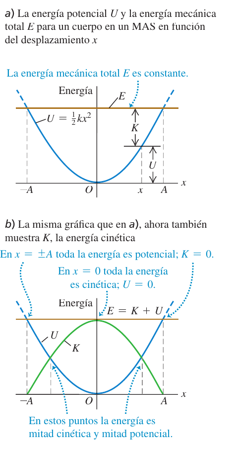
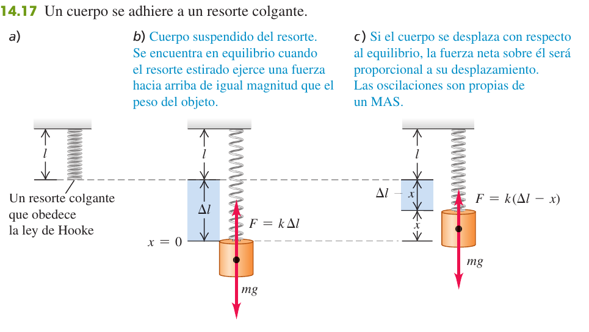
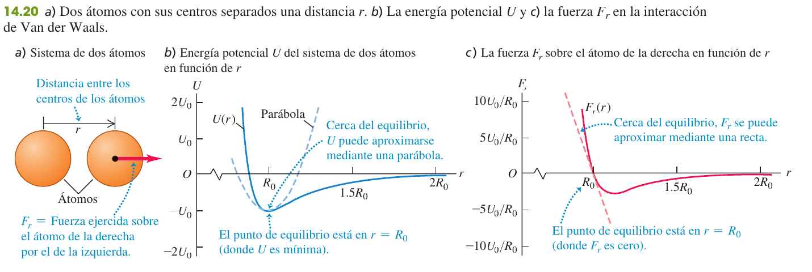
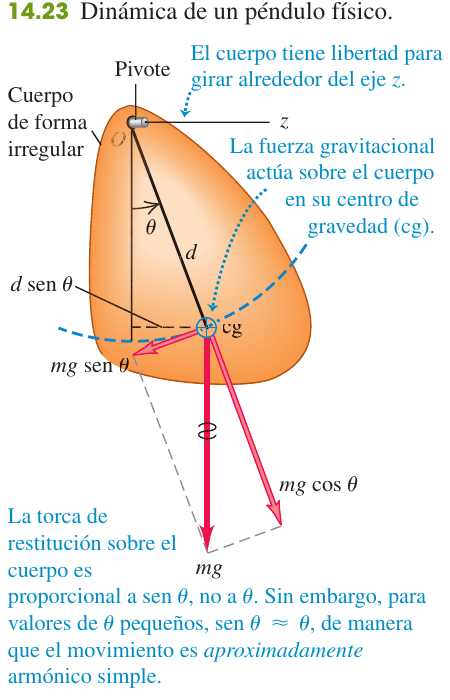

Movimiento periódico
Un columpio, la cuerda de una guitarra, un reloj de péndulo, el átomo de una molécula, la suspensión de tu coche: todos repiten su movimiento una y otra vez. Este tema te enseña a describirlo con tres números ($A$, $T$, $f$), a reconocer cuándo es un movimiento armónico simple (MAS) —el modelo más importante de toda la física— y a calcular su posición, velocidad, aceleración y energía en cualquier instante. Verás después el péndulo, qué pasa cuando hay rozamiento (oscilación amortiguada) y por qué empujar a un ritmo adecuado produce una oscilación enorme (resonancia).
El tema en 5 minutos P
Una sola idea: si al apartar un cuerpo de su equilibrio aparece una fuerza que lo devuelve y que es proporcional al desplazamiento, $F_x=-kx$, el cuerpo oscila con un movimiento armónico simple (MAS): $x=A\cos(\omega t+\phi)$. Todo el tema es ese modelo aplicado a distintos «resortes»: un muelle (horizontal o colgado), un péndulo (la gravedad hace de muelle), un cuerpo que gira, dos átomos. Siempre $\omega=\sqrt{\text{recuperación}/\text{inercia}}$, y el periodo no depende de la amplitud. Al final, qué pasa con rozamiento (amortiguamiento) y cuando se empuja al ritmo justo (resonancia).
Necesitas: la segunda ley de Newton y la ley de Hooke del resorte, $F=-kx$ (T4-T6); el movimiento circular uniforme, porque el MAS es su «sombra» (T3); la energía cinética, la potencial elástica $\tfrac12kx^2$ y su conservación (T6-T7); los choques totalmente inelásticos, que conservan la cantidad de movimiento pero no la energía (T8); el momento de inercia y la torca, para el péndulo físico (T9-T10); y $\cos$, $\sin$ en radianes, con $\dfrac{d}{dt}\cos\omega t=-\omega\sin\omega t$.
El método en 4 pasos (úsalo siempre, en este orden)
Es el planteamiento de las estrategias para resolver problemas del capítulo 14 del libro (identificar, plantear, ejecutar, evaluar) aplicado al MAS. U p.441-444
Las 6 fórmulas que hay que saber
| Fórmula | Cuándo se usa |
|---|---|
| $\omega=2\pi f=\dfrac{2\pi}{T}$, $\ \omega=\sqrt{\dfrac km}$, $\ T=2\pi\sqrt{\dfrac mk}$ | «periodo», «frecuencia», «cuántas oscilaciones», «qué masa hay que colgar», «si se duplica la masa…», «resorte cortado por la mitad». |
| $x=A\cos(\omega t+\phi)$, $\ v_x=-\omega A\sin(\omega t+\phi)$, $\ a_x=-\omega^2x$ | «dónde está en $t=\dots$», «en qué sentido se mueve», «escribe $x(t)$», «velocidad y aceleración máximas» ($\omega A$, $\omega^2A$). |
| $A=\sqrt{x_0^2+\dfrac{v_{0x}^2}{\omega^2}}$, $\ \tan\phi=-\dfrac{v_{0x}}{\omega x_0}$ | «en $t=0$ está en… y se mueve a…», «amplitud y ángulo de fase», un choque que deja al oscilador fuera de su equilibrio. |
| $E=\tfrac12mv_x^2+\tfrac12kx^2=\tfrac12kA^2$, $\ v=\omega\sqrt{A^2-x^2}$ | «energía del MAS» (teoría), «rapidez cuando está en $x$», «¿dónde $K=U$?», «energía perdida» si baja la amplitud. |
| $T=2\pi\sqrt{\dfrac Lg}$, $\ T=2\pi\sqrt{\dfrac{I}{mgd}}$ | «péndulo», «reloj de péndulo en una montaña o en la Luna», «cuerpo que cuelga de un eje», «medir un momento de inercia». |
| $k\,\Delta l=mg$ y $T=2\pi\sqrt{\Delta l/g}$; choque: $mv=(m+M)V$ | «resorte vertical», «se cuelga… y se estira…», «cae sobre una bandeja / masilla que se pega», «fuerza que ejerce el resorte». |
Qué cae en examen
Han caído 7 preguntas en 7 convocatorias y aquí manda la teoría: 6 preguntas de teoría de 4 puntos y 1 problema de 3 puntos. El MAS es el tema de teoría más repetido de toda la asignatura: «Energía del movimiento armónico simple» cayó en Febrero 2018, Febrero 2019, Febrero 2020 (1ª semana) y Febrero 2025 (X2, X3, X4, X7), «Movimiento armónico simple» en Febrero 2020 (2ª semana, X5) y las dos cosas juntas en Septiembre 2019 (X6). X ×6 Solo la de 2025 trae dos cuestiones cortas (resorte cortado por la mitad y reloj de péndulo en una montaña). El problema es una masa que cae sobre una bandeja colgada de un resorte: choque inelástico y luego MAS vertical (X1). X
Elige tu ruta
Esta página + lo marcado 🔴 imprescindible (secciones 1-5) + X1 + el desarrollo modelo y X7 del bloque «Preguntas de teoría».
Todo lo anterior + 🟡 el péndulo físico, el amortiguamiento y la resonancia + el resto del «Núcleo» + bloque «Práctica».
Chuleta, errores frecuentes, lista de comprobación; X1 sin mirar la solución y el desarrollo «Energía del MAS» escrito en una cara en 25 minutos.
¿?¿Qué tipo de problema es? 🔴 P
Lee el enunciado, busca la pista en la primera columna y ve directo al método y al ejercicio modelo.
| Si el enunciado dice… | Haz esto | Ejercicio modelo |
|---|---|---|
| «oscila con frecuencia…», «hace 100 oscilaciones en 120 s», «periodo y frecuencia angular» | $T=\text{tiempo}/\text{n.º de ciclos}$, $f=1/T$, $\omega=2\pi f$. | §1, 14.55 |
| «masa $m$ unida a un resorte de constante $k$: periodo», «qué masa hay que colgar para que $T=\dots$» | $\omega=\sqrt{k/m}$, $T=2\pi\sqrt{m/k}$; despeja la que falte. | 14.80 |
| «mismo resorte, vacío tarda… y con el astronauta…», «el coche vacío y cargado» | Mismo $k$: $m\propto T^2$, o $k$ con un dato y la masa con el otro. | 14.17, 14.66 |
| «en $t=0$ está en $x_0$ y se mueve a $v_0$: amplitud, fase, $x(t)$» | $\omega$; $A=\sqrt{x_0^2+v_0^2/\omega^2}$; $\phi$ con el signo de $\cos\phi$ (el de $x_0$) y de $\sin\phi$ (el de $-v_{0x}$). | 14.14, 14.13 |
| «en un instante va a $v$ y está a $x$ del equilibrio: amplitud, rapidez máxima» | Energía: $E=\tfrac12mv^2+\tfrac12kx^2$ ⇒ $A=\sqrt{2E/k}$, $v_{máx}=\sqrt{2E/m}$. | 14.37 |
| «¿dónde $K=U$?», «qué fracción de la energía es cinética en $A/2$» | $U/E=(x/A)^2$: $K=U$ en $|x|=A/\sqrt2$; en $A/2$, $U=E/4$. | 14.28 |
| «cuelga… y se estira…», «dónde está y hacia dónde va tras $t$ s», «fuerza que ejerce el resorte» | $k=mg/\Delta l$; $x$ desde el equilibrio cargado; fuerza neta $-kx$, fuerza del resorte $mg-kx$. | 14.80, 14.38 |
| «se deja caer sobre una bandeja», «masilla que se pega al bloque» | Caída ($\sqrt{2gh}$) → choque ($P$ se conserva) → MAS con la masa total; $x_0$ = cuánto baja el equilibrio. | X1, 14.79, 14.31 |
| «péndulo de longitud $L$», «gráfica $\theta(t)$», «reloj en una montaña / en la Luna» | $T=2\pi\sqrt{L/g}$: ni la masa ni la amplitud (si es pequeña). | 14.50, X7 |
| «cuerpo que cuelga de un eje», «biela», «varilla pivotada», «momento de inercia por su periodo» | Péndulo físico: $T=2\pi\sqrt{I/mgd}$ con $d$ pivote-cg e $I$ respecto al pivote; $L_{eq}=I/md$. | 14.55, 14.86 |
| «tras ocho ciclos la amplitud es…», «energía perdida», «amortiguamiento crítico» | $E=\tfrac12kA^2$ en cada extremo; $b_{crít}=2\sqrt{km}$. | 14.59 |
| «¿en qué porcentaje cambia la frecuencia si $k$ cambia un…?», «resorte cortado» | $f\propto\sqrt{k/m}$: $\Delta f/f\approx\tfrac12\Delta k/k$; mitad de resorte ⇒ $2k$. | 14.96, X7 |
| «ruedan sin resbalar unidos a un resorte» | Masa efectiva $M+I_{cm}/R^2$ en $T=2\pi\sqrt{M_{ef}/k}$. | Problema práctico, 14.84 |
| «Desarrolle el tema…» (MAS, energía del MAS) | Guion: definición → ecuación → $x(t)$, $\omega$ → energía $\tfrac12kA^2$ → diagrama → ejemplos. | Teoría |
1Descripción de la oscilación 🔴 U p.434-435
🎯 Antes de leer: un péndulo tarda 2 s en ir de un extremo al otro y volver. ¿Cuál es su periodo y cuál su frecuencia? (Piénsalo 20 s; la respuesta está en esta sección.)
Un columpio, la cuerda de una guitarra, tu corazón: hay una posición de equilibrio y, al apartar el cuerpo de ella, una fuerza de restitución lo empuja de vuelta; llega con velocidad, se pasa de largo, vuelve a ser empujado… Es un movimiento periódico u oscilación: se repite en ciclos iguales (piensa en una canica en el fondo de un cuenco). Se describe con cuatro números:
- Amplitud $A$: el desplazamiento máximo respecto al equilibrio (siempre positiva). Un ciclo completo recorre $4A$.
- Periodo $T$: lo que dura un ciclo (s). Frecuencia $f$: ciclos por segundo, en hercios ($1$ Hz $=1$ s$^{-1}$).
- Frecuencia angular $\omega$: radianes por segundo; es la que entra en las fórmulas del MAS.
Ejemplo mínimo (ejemplo 14.1). Un transductor de ultrasonido oscila a $f=6{,}7$ MHz: $T=1/f=1{,}5\times10^{-7}$ s y $\omega=2\pi f=4{,}2\times10^7$ rad/s. Error típico: confundir $f$ (ciclos/s) con $\omega$ (rad/s, $2\pi\approx6{,}28$ veces mayor), o tomar $\omega$ por la velocidad del cuerpo: es solo un ritmo de repetición.
U p.434-435✍️ Comprueba que lo has entendido (2 min)
- Una cuerda de guitarra vibra a 440 Hz. ¿Cuánto valen $T$ y $\omega$?
Ver respuesta
$T=1/440=2{,}27\times10^{-3}$ s (2,27 ms); $\omega=2\pi(440)=2{,}76\times10^3$ rad/s. - Un péndulo hace 5 oscilaciones completas en 12 s. Periodo, frecuencia y frecuencia angular.
Ver respuesta
$T=12/5=2{,}4$ s; $f=1/T=0{,}417$ Hz; $\omega=2\pi/T=2{,}62$ rad/s. - Un cuerpo oscila entre $x=-8$ cm y $x=+8$ cm. ¿Amplitud? ¿Qué distancia recorre en un periodo?
Ver respuesta
$A=8$ cm (no 16: se mide desde el equilibrio). En un ciclo va y vuelve dos veces la amplitud: $4A=32$ cm.
2Movimiento armónico simple 🔴 U p.435-442
🎯 Antes de leer: un bloque oscila en un resorte. ¿En qué punto es máxima su velocidad y en cuál es máxima su aceleración? (Piénsalo 20 s; la respuesta está en esta sección.)
El oscilador más sencillo: un bloque (o un deslizador en una pista de aire) sin rozamiento, sujeto a un resorte ideal. Con $x=0$ en el equilibrio (resorte sin estirar), el resorte cumple la ley de Hooke, $F_x=-kx$ (14.3): si estiras, tira hacia atrás; si comprimes, empuja hacia fuera; y tanto más cuanto más lejos. Una oscilación cuya fuerza de restitución es directamente proporcional al desplazamiento es un movimiento armónico simple (MAS). Con $F_x=ma_x$:
$$a_x=\frac{d^2x}{dt^2}=-\frac{k}{m}\,x\qquad(14.4)$$La aceleración es proporcional al desplazamiento y de signo contrario: máxima en los extremos, nula en el equilibrio. Error típico: como $a_x$ cambia con $x$, no valen las fórmulas de aceleración constante del tema 2 ($x=x_0+v_0t+\tfrac12at^2$…).
U p.435-436¿Qué función cumple (14.4)? El MAS es la «sombra» de un movimiento circular uniforme: una esfera $Q$ gira en un círculo de radio $A$ con rapidez angular constante $\omega$, con ángulo $\theta=\omega t+\phi$; su proyección $P$ sobre un diámetro está en $x=A\cos\theta$ y va y viene de $-A$ a $+A$. La aceleración de esa sombra es la componente de la centrípeta $\omega^2A$: $a_x=-\omega^2x$. Igualando con (14.4):
$$\omega=\sqrt{\frac km}\quad(14.10)\qquad f=\frac1{2\pi}\sqrt{\frac km}\quad(14.11)\qquad T=2\pi\sqrt{\frac mk}\quad(14.12)$$$T$ y $f$ no dependen de la amplitud: más rígido ⇒ más rápido; más masa ⇒ más lento. Ejemplo mínimo (ejemplo 14.2). Una fuerza de 6,0 N estira el resorte 0,030 m: $k=6{,}0/0{,}030=200$ N/m. Con un deslizador de 0,50 kg: $\omega=\sqrt{200/0{,}50}=20$ rad/s, $f=3{,}2$ Hz, $T=0{,}31$ s, lo apartes 2 cm o 5 cm. Error típico: pensar que una oscilación más grande tarda más.
U p.436-439
(ec. 14.13, 14.15 y 14.16). $\phi$ es el ángulo de fase (rad). El reparto: en un extremo ($x=\pm A$) el cuerpo se para un instante y la aceleración es máxima, $a_{máx}=\omega^2A$; en el equilibrio no hay fuerza y la rapidez es máxima, $v_{máx}=\omega A$. La velocidad va un cuarto de periodo por delante de la posición. Error típico: evaluar $\cos(\omega t+\phi)$ con la calculadora en grados: $\omega t$ y $\phi$ están en radianes.
U p.439-441$A$ y $\phi$ no los fija el resorte sino cómo arranca el movimiento. En $t=0$: $x_0=A\cos\phi$ (14.14) y $v_{0x}=-\omega A\sin\phi$ (14.17). Despejando:
$$A=\sqrt{x_0^2+\frac{v_{0x}^2}{\omega^2}}\quad(14.19)\qquad\qquad\phi=\arctan\!\left(-\frac{v_{0x}}{\omega x_0}\right)\quad(14.18)$$Casos rápidos: soltado en reposo en $x_0\gt0$ ⇒ $A=x_0$, $\phi=0$; sale del equilibrio hacia $+x$ ⇒ $A=v_{0x}/\omega$, $\phi=-\pi/2$. Si hay $x_0$ y $v_{0x}$, $A\gt|x_0|$. Los pasos: $\omega$ con $k$ y $m$ → $A$ y $\phi$ → $x(t)$ → comprueba que $x(0)=x_0$ y $v_x(0)=v_{0x}$. Ejemplo mínimo (ejemplo 14.3). El deslizador de antes ($\omega=20$ rad/s) con $x_0=0{,}015$ m y $v_{0x}=0{,}40$ m/s: $A=\sqrt{0{,}015^2+(0{,}40/20)^2}=0{,}025$ m, $\phi=\arctan(-1{,}33)=-0{,}93$ rad; $x=(0{,}025\ \text{m})\cos(20t-0{,}93)$. Error típico: fiarse de la arcotangente: puede dar el cuadrante equivocado. Comprueba que $\cos\phi$ tiene el signo de $x_0$ y $\sin\phi$ el de $-v_{0x}$.
U p.440-442✍️ Comprueba que lo has entendido (2 min)
- Una masa de 0,25 kg cuelga de un resorte de $k=100$ N/m. ¿$\omega$, $f$ y $T$? ¿Y si cuadruplicas la masa?
Ver respuesta
$\omega=\sqrt{100/0{,}25}=20$ rad/s; $f=20/2\pi=3{,}18$ Hz; $T=0{,}314$ s. Con $4m$, $T\propto\sqrt m$ se duplica: 0,628 s. - Un oscilador cumple $x=(0{,}05\ \text{m})\cos(10t+\pi/3)$. ¿$v_{máx}$, $a_{máx}$, $x_0$ y $v_{0x}$?
Ver respuesta
$v_{máx}=\omega A=0{,}5$ m/s; $a_{máx}=\omega^2A=5$ m/s²; $x_0=0{,}05\cos(\pi/3)=0{,}025$ m; $v_{0x}=-0{,}05(10)\sin(\pi/3)=-0{,}433$ m/s (está a la derecha y se acerca al equilibrio). - En $t=0$ un bloque pasa por el equilibrio moviéndose hacia $-x$. ¿Cuánto vale $\phi$?
Ver respuesta
$x_0=A\cos\phi=0$ ⇒ $\phi=\pm\pi/2$; $v_{0x}=-\omega A\sin\phi\lt0$ ⇒ $\sin\phi\gt0$ ⇒ $\phi=+\pi/2$ y $x=-A\sin\omega t$.
3Energía en el movimiento armónico simple 🔴 U p.442-445
🎯 Antes de leer: en un oscilador sin rozamiento, ¿en qué posición toda la energía es cinética y en cuál toda es potencial? ¿Cuánto vale la suma? (Piénsalo 20 s; la respuesta está en esta sección.)
Sin rozamiento la energía solo cambia de forma, como en un columpio. En los extremos el cuerpo está parado y el resorte estirado al máximo: todo es potencial. En el equilibrio el resorte está relajado y el cuerpo va a tope: todo es cinética. La única fuerza que trabaja es la del resorte, conservativa, así que (ec. 14.20-14.21):
$$E=\tfrac12mv_x^2+\tfrac12kx^2=\tfrac12kA^2=\text{constante}$$La energía es proporcional al cuadrado de la amplitud y no depende de la masa: doblar $A$ cuadruplica $E$. Con $x(t)$: $U=\tfrac12kA^2\cos^2(\omega t+\phi)$ y $K=\tfrac12kA^2\sin^2(\omega t+\phi)$; se intercambian dos veces por ciclo y suman siempre $E$. Error típico: creer que, a igual amplitud, un bloque más pesado oscila con más energía: $E=\tfrac12kA^2$ no lleva $m$ (sí la lleva $v_{máx}$).
U p.442-443
Despejando $v_x$ de la energía:
$$v_x=\pm\sqrt{\frac km}\,\sqrt{A^2-x^2}\quad(14.22)\qquad\qquad v_{máx}=\sqrt{\frac km}\,A=\omega A\quad(14.23)$$El $\pm$: por cada $x$ se pasa en los dos sentidos; el signo lo da hacia dónde se mueve. En el diagrama de energía $U=\tfrac12kx^2$ es una parábola, $E$ una recta horizontal y $K$ la distancia entre ambas; los puntos de retorno son los cortes, $x=\pm A$: el cuerpo nunca sale de $[-A,A]$. Fracciones: $U/E=(x/A)^2$. Ejemplo mínimo (ejemplo 14.4). Deslizador de $k=200$ N/m, $m=0{,}50$ kg, $A=0{,}020$ m: $v_{máx}=0{,}40$ m/s y $a_{máx}=8{,}0$ m/s²; a mitad de camino ($x=0{,}010$ m) $v_x=-0{,}35$ m/s, $a_x=-4{,}0$ m/s², $E=0{,}040$ J, $U=0{,}010$ J y $K=0{,}030$ J: un cuarto potencial, tres cuartos cinética. Error típico: creer que $K=U$ en $x=A/2$; como $U$ es cuadrática, ocurre en $x=\pm A/\sqrt2\approx\pm0{,}707A$.
U p.443-444
Estrategia 14.2 de U: si el problema relaciona $x$, $v_x$ y $a_x$ sin hablar del tiempo, usa la energía (o $a_x=-\omega^2x$); si da o pide un instante, usa $x(t)$. Los signos de $x$ y $v_x$ los pones tú según hacia dónde se mueve.
Choque con un oscilador (ejemplo 14.5). Una masilla $m$ cae en vertical sobre un bloque $M$ que oscila y se pega. El choque es instantáneo y totalmente inelástico: conserva la cantidad de movimiento horizontal, no la energía; antes y después, la energía del oscilador sí se conserva. Si cae justo en el equilibrio, $MV_1=(M+m)V_2$ y la nueva amplitud es $A_2=A_1\sqrt{M/(M+m)}$; si cae en un extremo (bloque parado), no se pierde nada y $A_2=A_1$. En los dos casos el nuevo periodo es $2\pi\sqrt{(M+m)/k}$. Error típico: conservar la energía a través del choque.
U p.444-445
✍️ Comprueba que lo has entendido (2 min)
- Un resorte de $k=200$ N/m oscila con $A=0{,}10$ m. ¿Energía total? ¿$U$ y $K$ cuando $x=0{,}05$ m?
Ver respuesta
$E=\tfrac12(200)(0{,}10)^2=1{,}0$ J; $U=\tfrac12(200)(0{,}05)^2=0{,}25$ J y $K=E-U=0{,}75$ J. - Doblas la amplitud de un oscilador. ¿Qué pasa con $E$, con $v_{máx}$ y con $T$? ¿Y para duplicar solo $E$?
Ver respuesta
$E\propto A^2$ se multiplica por 4; $v_{máx}=\omega A$ por 2; $T$ igual. Para duplicar $E$ basta multiplicar $A$ por $\sqrt2=1{,}414$. - $m=0{,}50$ kg, $k=50$ N/m y $A=0{,}20$ m. ¿Rapidez máxima? ¿Rapidez en $x=0{,}12$ m?
Ver respuesta
$\omega=\sqrt{50/0{,}50}=10$ rad/s; $v_{máx}=\omega A=2{,}0$ m/s; $v=\omega\sqrt{A^2-x^2}=10\sqrt{0{,}20^2-0{,}12^2}=1{,}6$ m/s.
4Aplicaciones del movimiento armónico simple 🔴 U p.446-450
🎯 Antes de leer: si cuelgas un bloque de un resorte vertical en lugar de ponerlo horizontal, ¿cambia la gravedad el periodo? ¿Y la posición de equilibrio? (Piénsalo 20 s; la respuesta está en esta sección.)
4.1 MAS vertical 🔴 U p.446
Cuelga una masa de un resorte: el peso lo estira hasta un nuevo equilibrio, con $k\,\Delta l=mg$. Toma $x=0$ en esa posición y $+x$ hacia arriba: a una distancia $x$ por encima, el resorte está estirado $\Delta l-x$ y la fuerza neta es $k(\Delta l-x)-mg=-kx$. Es la misma ley de Hooke ⇒ MAS con la misma $\omega=\sqrt{k/m}$. El peso cambia dónde está el centro de la oscilación, no su ritmo; y como $k/m=g/\Delta l$, $T=2\pi\sqrt{\Delta l/g}$. Ejemplo mínimo (ejemplo 14.6). Una persona de 980 N (100 kg) baja 2,8 cm un coche de 1000 kg: $k=980/0{,}028=3{,}5\times10^4$ N/m; con 1100 kg oscilando, $T=2\pi\sqrt{1100/3{,}5\times10^4}=1{,}11$ s y $f=0{,}90$ Hz. Error típico: medir $x$ desde la longitud natural, o confundir la fuerza neta ($-kx$) con la fuerza del resorte ($mg-kx$, hacia arriba).
U p.446-447
4.2 MAS angular 🟡 U p.447
La rueda de balance de un reloj mecánico oscila porque un muelle espiral ejerce una torca de restitución proporcional al ángulo, $\tau_z=-\kappa\theta$ ($\kappa$, constante de torsión). Con $\tau_z=I\alpha_z$: $d^2\theta/dt^2=-(\kappa/I)\theta$, la misma ecuación (14.4) con $x\to\theta$ y $k/m\to\kappa/I$:
$$\omega=\sqrt{\frac{\kappa}{I}}\qquad f=\frac1{2\pi}\sqrt{\frac{\kappa}{I}}\qquad\theta=\Theta\cos(\omega t+\phi)\qquad(14.24)$$La regla de todo el tema: $\omega=\sqrt{\text{constante de recuperación}/\text{inercia}}$. Error típico: poner la masa donde va el momento de inercia.
U p.4474.3 Vibraciones de moléculas ⚪ U p.447-449
Dos átomos (p. ej. de argón) se atraen de lejos y se repelen de cerca; la energía potencial de Van der Waals, $U=U_0\left[(R_0/r)^{12}-2(R_0/r)^{6}\right]$ (14.25), tiene un mínimo en $r=R_0$. Para desplazamientos pequeños $x=r-R_0$, la fuerza $F_r=-dU/dr$ se aproxima por $F_r\approx-(72U_0/R_0^2)\,x$ (14.29): ley de Hooke con $k=72U_0/R_0^2$. Toda curva de energía potencial con un mínimo se parece a una parábola cerca de él: por eso el MAS aparece en todas partes. Ejemplo mínimo (ejemplo 14.7). Ar$_2$ con $U_0=1{,}68\times10^{-21}$ J y $R_0=3{,}82\times10^{-10}$ m: $k=0{,}829$ N/m; con un átomo fijo y el otro ($6{,}63\times10^{-26}$ kg) oscilando, $f=5{,}63\times10^{11}$ Hz; como oscilan los dos, $m\to m/2$ y $f=7{,}96\times10^{11}$ Hz.
U p.447-449
✍️ Comprueba que lo has entendido (2 min)
- Al colgarle una masa, un resorte se estira 4,9 cm. ¿Con qué periodo oscila?
Ver respuesta
$T=2\pi\sqrt{\Delta l/g}=2\pi\sqrt{0{,}049/9{,}8}=0{,}444$ s, sea cual sea la masa. - Un bloque colgado de un resorte oscila con periodo 10 s en la Tierra. ¿Y en Marte, con $g$ al 40 %?
Ver respuesta
Los mismos 10 s: $T=2\pi\sqrt{m/k}$ no lleva $g$. En Marte solo cambia el equilibrio (el resorte se estira menos). - Una rueda de balance tiene $I=2{,}5\times10^{-7}$ kg·m² y su espiral $\kappa=4{,}0\times10^{-4}$ N·m/rad. ¿$\omega$ y $T$?
Ver respuesta
$\omega=\sqrt{\kappa/I}=\sqrt{1600}=40$ rad/s; $T=2\pi/40=0{,}157$ s.
5El péndulo simple 🔴 U p.450-451
🎯 Antes de leer: un niño y un adulto se columpian con la misma longitud de cadena y ángulos pequeños. ¿Quién tiene mayor periodo? (Piénsalo 20 s; la respuesta está en esta sección.)
Una «lenteja» pequeña colgada de un hilo de longitud $L$ que no se estira ni pesa. La tensión no tiene componente a lo largo del arco: la fuerza de restitución es la componente tangencial del peso, $F_\theta=-mg\sin\theta$ (14.30). Para $\theta$ pequeño ($\sin\theta\approx\theta$, en radianes) y con el arco $x=L\theta$: $F_\theta\approx-\dfrac{mg}{L}\,x$ (14.31), ley de Hooke con «$k$»$=mg/L$. Entonces
$$\omega=\sqrt{\frac gL}\ (14.32)\qquad f=\frac1{2\pi}\sqrt{\frac gL}\ (14.33)\qquad T=2\pi\sqrt{\frac Lg}\ (14.34)$$Ni la masa ni la amplitud entran: la masa se cancela porque la fuerza de restitución (el peso) es proporcional a ella. Más largo ⇒ más lento; más $g$ ⇒ más rápido. Ejemplo mínimo (ejemplo 14.8). $L=1{,}000$ m, $g=9{,}800$ m/s²: $T=2{,}007$ s y $f=0{,}4983$ Hz; cada «tic» o «tac» dura un segundo. Error típico: medir $L$ hasta el borde de la lenteja (es hasta su centro), o dejar $\theta$ en grados.
U p.450-451
Ángulo grande: el movimiento ya no es exactamente armónico y el periodo crece algo con la amplitud $\Theta$: $T=2\pi\sqrt{L/g}\left(1+\tfrac1{2^2}\sin^2\tfrac\Theta2+\tfrac{1^2\cdot3^2}{2^2\cdot4^2}\sin^4\tfrac\Theta2+\cdots\right)$ (14.35). Con $\Theta\lt15^\circ$ la diferencia es menor del 0,5 %: por eso un reloj de péndulo sigue en hora aunque la oscilación se apague. Gravedad efectiva: en un ascensor que acelera hacia arriba con $a$, $g_{ef}=g+a$ y $T$ disminuye; en caída libre (o en una nave en órbita) el péndulo no oscila. En el punto más bajo la fuerza tangencial es cero, pero la lenteja recorre un arco: su aceleración es la centrípeta $v^2/L$, hacia arriba, y la tensión es allí mayor que el peso.
U p.450-451✍️ Comprueba que lo has entendido (2 min)
- ¿Qué periodo tiene un péndulo de 2,45 m? ¿Y si la lenteja pesara el doble?
Ver respuesta
$T=2\pi\sqrt{2{,}45/9{,}80}=2\pi(0{,}5)=\pi=3{,}14$ s; con doble masa, el mismo. - Te llevas el péndulo de 1,000 m del ejemplo 14.8 a la Luna ($g=1{,}62$ m/s²). ¿Periodo?
Ver respuesta
$T=2\pi\sqrt{1{,}000/1{,}62}=4{,}94$ s: menos gravedad, más lento. - ¿Qué hay que hacer con $L$ para duplicar el periodo? ¿Y para duplicar la frecuencia?
Ver respuesta
$T\propto\sqrt L$: multiplicar $L$ por 4. $f\propto1/\sqrt L$: dividir $L$ entre 4.
6El péndulo físico 🟡 U p.451-453
🎯 Antes de leer: una regla colgada de un extremo oscila como un péndulo. ¿Sirve $T=2\pi\sqrt{L/g}$ con $L$ la longitud de la regla? (Piénsalo 20 s; la respuesta está en esta sección.)
Un péndulo físico es cualquier cuerpo real que oscila colgado de un eje horizontal: una pierna al andar, una biela, una campana. Su centro de gravedad está a una distancia $d$ del pivote; al girarlo un ángulo $\theta$, el peso produce una torca de restitución $\tau_z=-(mg)(d\sin\theta)\approx-(mgd)\theta$ (14.36-14.37). Con $\tau_z=I\,d^2\theta/dt^2$ sale otra vez (14.4), con $mgd/I$ en lugar de $k/m$:
$$\omega=\sqrt{\frac{mgd}{I}}\quad(14.38)\qquad\qquad T=2\pi\sqrt{\frac{I}{mgd}}\quad(14.39)$$$I$ es el momento de inercia respecto al pivote (a menudo con el teorema de los ejes paralelos, tema 9). Con $I=mL^2$ y $d=L$ vuelves al péndulo simple. Ejemplo mínimo (ejemplo 14.9). Varilla uniforme de longitud $L$ pivotada en un extremo: $I=\tfrac13ML^2$, $d=L/2$ ⇒ $T=2\pi\sqrt{2L/3g}$; con $L=1{,}00$ m, $T=1{,}64$ s, $\sqrt{2/3}=0{,}816$ veces el del péndulo simple de igual longitud (su masa está, en promedio, más cerca del pivote). Error típico: usar la longitud total en vez de $d$, o un $I$ respecto al centro de masa.
U p.451-452
Medir un momento de inercia. Se cuelga la pieza de un eje, se mide $T$ cronometrando muchas oscilaciones, y con $m$ y $d$ se despeja $I=mgd\,T^2/4\pi^2$ (ejercicio 14.55). Longitud equivalente. Un péndulo físico oscila como un péndulo simple de longitud $L_{eq}=I/(md)$ (ejercicio 14.86). Con las mismas ideas se estima el ritmo natural de la marcha de un animal: la pierna es un péndulo físico, y cuanto más larga, pasos más pausados ($T\propto\sqrt L$, ejemplo 14.10).
U p.452-453✍️ Comprueba que lo has entendido (2 min)
- Un aro de radio 0,20 m cuelga de un clavo por su borde. ¿Periodo? ($I_{cm}=MR^2$.)
Ver respuesta
Ejes paralelos: $I=MR^2+MR^2=2MR^2$, $d=R$ ⇒ $T=2\pi\sqrt{2R/g}=2\pi\sqrt{0{,}40/9{,}80}=1{,}27$ s. - Una varilla de longitud $2L$ pivotada en un extremo tiene su cg a $L$, como un péndulo simple de longitud $L$. ¿Qué periodo es mayor?
Ver respuesta
El de la varilla: misma $d=L$, pero $I=\tfrac13m(2L)^2=\tfrac43mL^2\gt mL^2$ y $T\propto\sqrt I$. - ¿Qué longitud equivalente tiene una varilla de 1,5 m pivotada en un extremo?
Ver respuesta
$L_{eq}=\dfrac{I}{md}=\dfrac{\tfrac13mL^2}{m(L/2)}=\tfrac23L=1{,}00$ m.
7Oscilaciones amortiguadas 🟡 U p.453-455
🎯 Antes de leer: un columpio al que no se empuja acaba parándose. ¿Qué le pasa a su amplitud y a su energía mecánica? (Piénsalo 20 s; la respuesta está en esta sección.)
Un columpio al que dejas de empujar se para: el rozamiento roba energía en cada ciclo. Es el amortiguamiento. El caso más sencillo es una fuerza proporcional a la velocidad (aceite, aire, amortiguadores), $F_x=-bv_x$ (14.40). La segunda ley da $-kx-b\,dx/dt=m\,d^2x/dt^2$ (14.41) y, si $b$ es pequeña:
$$x=Ae^{-(b/2m)t}\cos(\omega' t+\phi)\quad(14.42)\qquad\omega'=\sqrt{\frac km-\frac{b^2}{4m^2}}\quad(14.43)$$La amplitud $Ae^{-(b/2m)t}$ decae exponencialmente, más deprisa cuanto mayor es $b$, y $\omega'$ es algo menor que $\omega=\sqrt{k/m}$: el periodo aumenta. Error típico: confundir $\omega'$ (libre con rozamiento) con $\omega$ (sin rozamiento).
U p.453-454
$\omega'$ se anula cuando $b=2\sqrt{km}$ (14.44), el amortiguamiento crítico:
- Subamortiguado ($b\lt2\sqrt{km}$): oscila con amplitud decreciente. Ejemplo: la punta de un avión que una ráfaga levanta se balancea arriba y abajo cada vez menos hasta recuperar su altitud.
- Crítico ($b=2\sqrt{km}$): no oscila y vuelve al equilibrio lo más rápido posible; es lo que se busca en un amortiguador.
- Sobreamortiguado ($b\gt2\sqrt{km}$): no oscila y vuelve más despacio.
Energía. La fuerza amortiguadora no es conservativa: $\dfrac{dE}{dt}=-bv_x^2$ (14.45), siempre negativa; la energía se convierte en energía interna (calor). Como en cada extremo $E=\tfrac12kA^2$, si la amplitud pasa de $A_1$ a $A_2$ la energía se multiplica por $(A_2/A_1)^2$ (ejercicio 14.59). Error típico: restar amplitudes en lugar de energías.
U p.454-455✍️ Comprueba que lo has entendido (2 min)
- Una masa de 0,50 kg en un resorte de 200 N/m. ¿Qué $b$ da amortiguamiento crítico?
Ver respuesta
$b_{crít}=2\sqrt{km}=2\sqrt{200\cdot0{,}50}=20$ kg/s. - Con $b=12$ kg/s, ¿cuánto vale $\omega'$? Compárala con $\omega$.
Ver respuesta
$\omega'=\sqrt{400-\dfrac{12^2}{4(0{,}50)^2}}=\sqrt{400-144}=16$ rad/s, frente a $\omega=20$ rad/s: oscila más despacio. - La amplitud de un oscilador amortiguado baja de 10 cm a 5 cm. ¿Qué fracción de su energía ha perdido?
Ver respuesta
$E\propto A^2$: queda $(5/10)^2=1/4$, así que se ha perdido el 75 %.
8Oscilaciones forzadas y resonancia 🟡 U p.455-456
🎯 Antes de leer: empujas un columpio siempre al mismo ritmo. ¿Para qué frecuencia de empuje la amplitud crece muchísimo? (Piénsalo 20 s; la respuesta está en esta sección.)
Para que un oscilador amortiguado no se pare hay que empujarlo periódicamente. Si empujas un columpio a su ritmo natural, cada empujón suma y la amplitud se hace enorme; a otro ritmo, unos empujones deshacen lo que hacen otros. Con una fuerza $F_{máx}\cos\omega_dt$, pasado el transitorio el cuerpo oscila con la frecuencia impulsora $\omega_d$ (no con la suya) y con amplitud
$$A=\frac{F_{máx}}{\sqrt{(k-m\omega_d^2)^2+b^2\omega_d^2}}\qquad(14.46)$$Cuando $\omega_d\approx\omega=\sqrt{k/m}$ el primer término se anula y $A$ es máxima: resonancia, con $A\approx F_{máx}/(b\omega)$. Con poco amortiguamiento el pico es alto y estrecho; más $b$ lo baja, lo ensancha y lo corre a frecuencias menores; si $b\ge\sqrt{2km}$ el pico desaparece. Con $\omega_d\to0$, $A=F_{máx}/k$. Por eso una tropa no cruza un puente al paso. Error típico: creer que el forzado oscila con su frecuencia propia, o que la resonancia exige $b=0$ (con $b$ la amplitud es grande pero finita).
U p.455-456

✍️ Comprueba que lo has entendido (2 min)
- Empujas periódicamente un oscilador amortiguado. Una vez estabilizado, ¿con qué frecuencia oscila?
Ver respuesta
Con la de la fuerza impulsora, $\omega_d$, aunque sea distinta de su frecuencia natural. - Masa de 0,50 kg y $k=200$ N/m, con $F_{máx}=2{,}0$ N y $b=1{,}0$ kg/s. ¿Amplitud con $\omega_d\to0$ y en resonancia?
Ver respuesta
$\omega_d\to0$: $A=F_{máx}/k=0{,}010$ m. En $\omega_d=\omega=20$ rad/s: $A=F_{máx}/(b\omega)=2{,}0/20=0{,}10$ m, diez veces más. - Para ese mismo oscilador, ¿a partir de qué $b$ ya no hay pico de resonancia?
Ver respuesta
$b\ge\sqrt{2km}=\sqrt{200}=14{,}1$ kg/s.
9Ejercicios resueltos
Las 7 preguntas de examen real (X1-X7) están todas aquí, completas: el único problema (X1, la masa que cae sobre una bandeja colgada de un resorte) en el «Núcleo», y las seis de teoría, con el «desarrollo modelo» y las cuestiones, en su propio bloque. Los acompañan los 16 problemas del solucionario (traducidos y ampliados) y el problema práctico de U, ordenados por método, no por fuente: once en el Núcleo (uno por método) y siete de Práctica que repiten esos métodos en otras situaciones. Intenta resolver tú antes de abrir la solución. Cada ejercicio termina con su receta. Usamos $g=9{,}80$ m/s² como en el libro (X1 usa $9{,}8$).
| Ejercicio | Qué tipo es | Método que te llevas |
|---|---|---|
| Problema 14.17 | Medir una masa con un resorte (mismo resorte, dos periodos) | $T=2\pi\sqrt{m/k}$ ⇒ $m\propto T^2$: $m_2/m_1=(T_2/T_1)^2$; después resta la masa conocida |
| Problema 14.14 | Amplitud y fase con $x_0$ y $v_{0x}$ | $\omega=\sqrt{k/m}$ → $A=\sqrt{x_0^2+v_{0x}^2/\omega^2}$ → $\phi$ con (14.18) revisando el cuadrante → comprueba $x(0)$ y $v_x(0)$ |
| Problema 14.37 | Dato $(x,v)$ en un instante, sin tiempo | Energía: $E=\tfrac12mv^2+\tfrac12kx^2$ ⇒ $A=\sqrt{2E/k}$, $v_{máx}=\sqrt{2E/m}$ |
| Problema 14.28 | Reparto de energía: ¿dónde y cuándo $K=U$? | $U/E=(x/A)^2$ ⇒ $K=U$ en $|x|=A/\sqrt2$, cuatro veces por ciclo, cada $T/4$ |
| Problema 14.80 | Resorte vertical: posición en un instante y fuerza del resorte | $k=F/\Delta l$; $t=0$ en el equilibrio ⇒ $x=-A\sin\omega t$; fuerza del resorte $=mg-kx$ (la neta es $-kx$) |
| X1 · Feb 2022 | Cae, choca y oscila (resorte vertical) | $\sqrt{2gh}$ → cantidad de movimiento en el choque → MAS con la masa total, $x_0=mg/k$ desde el nuevo equilibrio y $A=\sqrt{x_0^2+V^2/\omega^2}$ |
| Problema 14.50 | Péndulo simple leído en una gráfica $\theta(t)$ | $T$ entre dos máximos, amplitud = altura del máximo; $L=g(T/2\pi)^2$; la masa no se puede saber |
| Problema 14.55 | Péndulo físico: medir un momento de inercia | $T$ = tiempo / n.º de oscilaciones; $I=mgd\,T^2/4\pi^2$ con $d$ del pivote al cg |
| Problema 14.59 | Energía perdida por amortiguamiento | $E=\tfrac12kA^2$ con la amplitud de cada ciclo; resta energías, no amplitudes |
| Problema 14.96 | Cambio relativo pequeño de la frecuencia | $f\propto\sqrt{k/m}$ ⇒ cociente exacto $\sqrt{k'/k}$ o $\Delta f/f\approx\tfrac12\Delta k/k$ |
| Problema práctico | Oscilador que rueda sin resbalar | $\sum F=Ma_{cm}$, $\sum\tau=I_{cm}\alpha$, $a_{cm}=R\alpha$ ⇒ $a_{cm}=-\omega^2x$; o masa efectiva $M+I_{cm}/R^2$ |
Problema 14.17 — «Pesar» a un astronauta con un resorte E 14-4 🔴 U p.460, 438
Para «pesar» a los astronautas en el espacio se une una silla de 42,5 kg a un resorte y se deja oscilar. Vacía, tarda 1,30 s en una vibración completa; con un astronauta sentado (sin tocar el suelo) tarda 2,54 s. ¿Qué masa tiene el astronauta?
Inténtalo primero; abre una pista solo si te atascas.
Pista 1
El periodo $T=2\pi\sqrt{m/k}$ no depende de $g$: mide masa (inercia). Para el mismo resorte, $m\propto T^2$.
Pista 2
$m_{tot}=42{,}5\,(2{,}54/1{,}30)^2$ y resta la masa de la silla.
Solución completa
- Periodo: $T=2\pi\sqrt{\dfrac mk}$ (no depende de $g$) ⇒ $k=\dfrac{4\pi^2m}{T^2}$
- Mismo resorte: $m\propto T^2$
- Por qué funciona en ingravidez. Una balanza mide peso; el periodo depende de la masa (inercia), no de $g$.
- Constante del resorte (silla vacía): $$k=\frac{4\pi^2m}{T^2}=\frac{4\pi^2(42{,}5)}{(1{,}30)^2}=993\ \text{N/m}$$
- Masa total (con astronauta): $$m_{tot}=\frac{T^2k}{4\pi^2}=\frac{(2{,}54)^2(993)}{4\pi^2}=162\ \text{kg}$$
- Masa del astronauta: $$m_{astr}=162-42{,}5=\mathbf{120\ kg}\ \ (119{,}7\ \text{kg})$$ Atajo sin $k$: $m_{astr}=42{,}5\big[(2{,}54/1{,}30)^2-1\big]=119{,}7$ kg.
Usar $T$ en lugar de $T^2$ (proporcionalidad lineal) o olvidar restar la masa de la silla.
Problema 14.14 — Amplitud y fase con $x_0$ y $v_0$ distintos de cero E 14-4 🔴 U p.460, 441
Repite el ejercicio 14.13 (bloque de 2,00 kg, $k=300$ N/m) suponiendo que en $t=0$ el bloque tiene velocidad $-4{,}00$ m/s y desplazamiento $+0{,}200$ m.
Inténtalo primero; abre una pista solo si te atascas.
Pista 1
$\omega=\sqrt{k/m}$; amplitud de (14.19): $A=\sqrt{x_0^2+v_0^2/\omega^2}$.
Pista 2
La fase: $\phi=\arctan(-v_{0x}/\omega x_0)$ revisando el cuadrante; comprueba $x(0)$ y $v(0)$.
Solución completa
- $\omega=\sqrt{k/m}$; $A=\sqrt{x_0^2+\dfrac{v_{0x}^2}{\omega^2}}$; $\phi=\arctan\Big(-\dfrac{v_{0x}}{\omega\,x_0}\Big)$ (revisar el cuadrante)
- Comprobación: $x(0)=A\cos\phi$, $v_x(0)=-\omega A\sin\phi$
- Datos: $$\omega=12{,}25\ \text{rad/s},\qquad x_0=+0{,}200\ \text{m},\quad v_{0x}=-4{,}00\ \text{m/s}$$
- a) Amplitud: $$A=\sqrt{0{,}200^2+\frac{(-4{,}00)^2}{12{,}25^2}}=\sqrt{0{,}0400+0{,}1067}=\mathbf{0{,}383\ m}$$ Mayor que 0,200 m porque, además de estar desplazado, el bloque se mueve.
- b) Fase: $$\phi=\arctan\Big(-\frac{-4{,}00}{(12{,}25)(0{,}200)}\Big)=\arctan(1{,}633)=\mathbf{1{,}02\ rad}\ (58{,}5^\circ)$$ Cuadrante: $x_0>0$ ⇒ $\cos\phi>0$; $v_{0x}<0$ ⇒ $\sin\phi>0$: primer cuadrante ✓.
- c) Posición: $$x=(0{,}383\ \text{m})\cos\big[(12{,}2\ \text{rad/s})\,t+1{,}02\ \text{rad}\big]$$
- Comprobación: $$x(0)=0{,}383\cos1{,}02=0{,}200\ \text{m}\ \checkmark,\qquad v_x(0)=-12{,}25(0{,}383)\sin1{,}02=-4{,}00\ \text{m/s}\ \checkmark$$
Olvidar el signo menos de (14.18): sale $\phi=-58{,}5^\circ$, que describe un bloque que se aleja.
Problema 14.37 — Amplitud por conservación de la energía E 14-11 🔴 U p.461, 442-444
Un deslizador de 175 g sobre una pista de aire horizontal sin fricción está unido a un resorte ideal fijo, cuya constante de fuerza es 155 N/m. En el momento en que lo mides, se mueve a 0,815 m/s y está a 3,00 cm de su posición de equilibrio. Usa la conservación de la energía para calcular a) la amplitud del movimiento y b) la rapidez máxima del deslizador. c) ¿Cuál es la frecuencia angular de las oscilaciones?
Inténtalo primero; abre una pista solo si te atascas.
Pista 1
Conoces $x$ y $v$ en un instante, no el tiempo: usa la energía, $E=\tfrac12mv^2+\tfrac12kx^2$.
Pista 2
En el extremo toda es potencial ($A=\sqrt{2E/k}$) y en el equilibrio toda es cinética ($v_{máx}=\sqrt{2E/m}$). Pasa g y cm a kg y m.
Solución completa
- Energía: $E=\tfrac12mv^2+\tfrac12kx^2$ (constante)
- Extremo: $\tfrac12kA^2=E$; equilibrio: $\tfrac12mv_{m\acute ax}^2=E$
- $\omega=\sqrt{k/m}$
- Datos en SI: $$m=0{,}175\ \text{kg},\quad k=155\ \text{N/m},\quad v=0{,}815\ \text{m/s},\quad x=0{,}0300\ \text{m}$$
- Energía total: $$E=\tfrac12(0{,}175)(0{,}815)^2+\tfrac12(155)(0{,}0300)^2=0{,}0581+0{,}0698=0{,}128\ \text{J}$$
- a) Amplitud: $$A=\sqrt{\frac{2E}{k}}=\sqrt{\frac{2(0{,}128)}{155}}=\mathbf{0{,}0406\ m}\ (4{,}06\ \text{cm})$$
- b) Rapidez máxima: $$v_{m\acute ax}=\sqrt{\frac{2E}{m}}=\sqrt{\frac{2(0{,}128)}{0{,}175}}=\mathbf{1{,}21\ m/s}$$
- c) Frecuencia angular: $$\omega=\sqrt{\frac km}=\sqrt{\frac{155}{0{,}175}}=\mathbf{29{,}8\ rad/s}$$ Comprobación: $v_{m\acute ax}=\omega A=29{,}76(0{,}0406)=1{,}21$ m/s ✓.
Olvidar pasar gramos y centímetros a kg y m; tomar $A=3{,}00$ cm (no está en reposo, así que $A\gt|x|$).
Problema 14.28 — ¿Cuándo es la energía potencial igual a la cinética? E 14-7 🔴 U p.461, 437-444
Un oscilador armónico tiene frecuencia angular $\omega$ y amplitud $A$. a) Calcula la magnitud del desplazamiento y de la velocidad cuando la energía potencial elástica es igual a la cinética (con $U=0$ en el equilibrio). b) ¿Cuántas veces sucede eso en cada ciclo? ¿Cada cuánto tiempo? c) Cuando el desplazamiento es $A/2$, ¿qué fracción de la energía total es cinética y qué fracción potencial?
Inténtalo primero; abre una pista solo si te atascas.
Pista 1
$U=K$ y $U+K=E$ implican $U=E/2$; recuerda que $U=\tfrac12kx^2$ es cuadrática en $x$.
Pista 2
En el círculo de referencia son los cuatro ángulos a $45^\circ$ de los ejes: están equiespaciados en el tiempo.
Solución completa
- Energía total: $E=\tfrac12kA^2=K+U$; $U=\tfrac12kx^2$
- $\dfrac UE=\Big(\dfrac xA\Big)^2$, $\ \dfrac KE=1-\Big(\dfrac xA\Big)^2$; $v_{m\acute ax}=\omega A$
- a) Posición ($U=K$ ⇒ $2U=E$): $$2\cdot\tfrac12kx^2=\tfrac12kA^2\ \Rightarrow\ |x|=\frac{A}{\sqrt2}\approx\mathbf{0{,}707\,A}$$
- a) Velocidad ($2K=E$): $$m\,v^2=\tfrac12kA^2\ \Rightarrow\ |v|=\sqrt{\frac km}\frac{A}{\sqrt2}=\mathbf{\frac{\omega A}{\sqrt2}}\ \ (=v_{m\acute ax}/\sqrt2)$$
- b) Cuántas veces. En un ciclo $x$ pasa por $+A/\sqrt2$ dos veces y por $-A/\sqrt2$ dos veces: 4 veces por ciclo.
- b) Cada cuánto ($x=A\cos\omega t$): $$\cos\omega t=\pm\frac1{\sqrt2}\ \Rightarrow\ \omega t=\frac\pi4,\ \frac{3\pi}4,\ \frac{5\pi}4,\ \frac{7\pi}4\ \Rightarrow\ \Delta t=\frac{\pi}{2\omega}=\mathbf{\frac T4}$$
- c) $x=A/2$: $$U=\tfrac12k\Big(\frac A2\Big)^2=\tfrac14E\ \Rightarrow\ \mathbf{U=\frac E4},\quad\mathbf{K=\frac{3E}{4}}$$ $U$ es cuadrática en $x$: a mitad de camino solo hay un cuarto de la energía potencial.
Responder $x=A/2$ para $U=K$ (pensar que $U$ es lineal) o «2 veces por ciclo».
Problema 14.80 — Resorte vertical: masa, posición en un instante y fuerza del resorte E 14-24 🔴 U p.464, 446
Una fuerza de 40,0 N estira un resorte vertical 0,250 m. a) ¿Qué masa hay que colgar para que el sistema oscile con periodo 1,00 s? b) Si la amplitud es 0,050 m y el periodo el del apartado a), ¿dónde está el objeto y en qué sentido se mueve 0,35 s después de pasar por el equilibrio dirigiéndose hacia abajo? c) ¿Qué fuerza (módulo y sentido) ejerce el resorte sobre el objeto cuando está 0,030 m por debajo del equilibrio y sube?
Inténtalo primero; abre una pista solo si te atascas.
Pista 1
$k=F/\Delta l$ y $m=k\,(T/2\pi)^2$. Elige $t=0$ en el paso por el equilibrio hacia abajo y deduce la fase.
Pista 2
La fuerza neta es $-kx$; la del resorte es $mg-kx$ (hacia arriba positivo).
Solución completa
- $k=\dfrac{F}{\Delta l}$; $m=k\Big(\dfrac{T}{2\pi}\Big)^2$
- Desde el equilibrio ($+x$ hacia arriba): $x=-A\sin\omega t$, $v_x=-A\omega\cos\omega t$ (pasa por el equilibrio hacia abajo en $t=0$)
- Fuerza neta: $-kx$; fuerza del resorte: $F_{res}=mg-kx$ (hacia arriba +)
- a) Masa: $$k=\frac{40{,}0}{0{,}250}=160\ \text{N/m},\qquad m=160\Big(\frac{1{,}00}{2\pi}\Big)^2=\mathbf{4{,}05\ kg}$$
- b) Origen de tiempos: $t=0$ al pasar por el equilibrio hacia abajo ⇒ $\phi=+\pi/2$, $\omega=2\pi$ rad/s. En $t=0{,}35$ s ($=0{,}35\,T$): $$x=-0{,}050\sin(0{,}70\pi)=\mathbf{-0{,}0405\ m}\quad(4{,}0\ \text{cm por debajo})$$ $$v_x=-0{,}050(2\pi)\cos(0{,}70\pi)=+0{,}185\ \text{m/s}\ \Rightarrow\ \text{se mueve hacia arriba}$$ En $T/4=0{,}25$ s llega al punto más bajo; a 0,35 s ya sube, pero aún no llega al equilibrio (lo haría en 0,50 s).
- c) Fuerza del resorte ($x=-0{,}030$ m; no la neta): $$F_{res}=mg-kx=(4{,}05)(9{,}80)-160(-0{,}030)=39{,}7+4{,}8=\mathbf{44{,}5\ N}\ \text{hacia arriba}$$ Que suba o baje no importa: la fuerza del resorte solo depende de la posición.
En c), contestar $kx=4{,}8$ N (la fuerza neta) en lugar de la del resorte; en b), equivocar el signo de la fase y colocar el objeto por encima.
X1 — Masa que cae sobre una bandeja colgada de un resorte: choque inelástico y MAS vertical X 🔴 examen real U p.47, 248, 438-446
Un resorte con masa despreciable y constante elástica $k=500$ N/m cuelga verticalmente y de su extremo inferior cuelga una bandeja de 0,5 kg. Se deja caer sobre la bandeja una masa deformable de 1 kg desde una altura de 0,5 m. Suponiendo que el impacto de la masa sobre la bandeja es perfectamente inelástico y que el sistema queda en movimiento armónico simple vertical, calcula: a) la velocidad de la bandeja y la masa justo después del impacto; b) la amplitud del movimiento posterior; c) el periodo de ese movimiento. (3 puntos)
Inténtalo primero; abre una pista solo si te atascas.
Pista 1
Tres etapas: caída libre (cinemática), choque (se conserva $P_y$) y MAS del conjunto. No uses la energía a través del choque.
Pista 2
El MAS se mide desde el nuevo equilibrio, a $mg/k$ más abajo: $x_0=+mg/k$, $v_0=-V$; luego $A=\sqrt{x_0^2+V^2/\omega^2}$.
Solución completa
Este mismo ejercicio está resuelto en el tema 8 (X3) con la energía del resorte y de la gravedad; aquí lo hacemos con las herramientas de este tema (equilibrio desplazado, $\omega$, $A$ de las condiciones iniciales), que es más corto y es lo que el enunciado sugiere ("queda en MAS"). Los resultados coinciden.
- Caída libre: $v_0=\sqrt{2gh}$; choque totalmente inelástico: $m\,v_0=(m+M)\,V$
- MAS vertical: $\omega=\sqrt{\dfrac{k}{m+M}}$, $T=2\pi\sqrt{\dfrac{m+M}{k}}$
- Nuevo equilibrio desplazado: $x_0=\dfrac{m\,g}{k}$ (masa añadida)
- Amplitud: $A=\sqrt{x_0^2+\dfrac{v_{0x}^2}{\omega^2}}$; fase: $\phi=\arctan\Big(-\dfrac{v_{0x}}{\omega\,x_0}\Big)$
Este ejercicio está resuelto en el tema 8 (X3) con la energía; aquí con las herramientas del MAS. Los resultados coinciden.
- Tres etapas. Caída libre ⇒ cinemática; choque instantáneo ⇒ solo se conserva la cantidad de movimiento; después, MAS del conjunto. Datos: $k=500$ N/m, $M=0{,}5$ kg, $m=1$ kg, $h=0{,}5$ m. No se puede usar la energía a través del choque: pierde energía cinética.
- Caída libre: $$v_0=\sqrt{2gh}=\sqrt{2(9{,}8)(0{,}5)}=3{,}13\ \text{m/s hacia abajo}$$
- a) Choque (el impulso del peso y del resorte es despreciable): $$m\,v_0=(m+M)\,V\ \Rightarrow\ V=\frac{1(3{,}13)}{1{,}5}=\mathbf{2{,}09\ m/s}\ \text{hacia abajo}$$
- Nuevo equilibrio. La gravedad solo desplaza el equilibrio: el del conjunto está más abajo, a $$\frac{m\,g}{k}=\frac{1(9{,}8)}{500}=0{,}0196\ \text{m}$$ Condiciones iniciales ($+x$ hacia arriba, $x$ desde el nuevo equilibrio): $x_0=+0{,}0196$ m (el choque ocurre por encima) y $v_{0x}=-2{,}09$ m/s.
- Frecuencia angular (oscila el conjunto): $$\omega=\sqrt{\frac{k}{m+M}}=\sqrt{\frac{500}{1{,}5}}=18{,}26\ \text{rad/s}$$
- b) Amplitud: $$A=\sqrt{x_0^2+\frac{v_{0x}^2}{\omega^2}}=\sqrt{0{,}0196^2+\Big(\frac{2{,}087}{18{,}26}\Big)^2}=\sqrt{0{,}0196^2+0{,}1143^2}=\mathbf{0{,}116\ m}$$
- c) Periodo: $$T=2\pi\sqrt{\frac{m+M}{k}}=2\pi\sqrt{\frac{1{,}5}{500}}=\mathbf{0{,}344\ s}$$ No depende de $g$ ni de $A$.
- Ampliación (ecuación completa): $$\phi=\arctan\Big(\frac{2{,}087}{(18{,}26)(0{,}0196)}\Big)=\arctan(5{,}83)=1{,}40\ \text{rad}\ (80{,}3^\circ)$$ $$x(t)=(0{,}116\ \text{m})\cos\big[(18{,}26\ \text{rad/s})\,t+1{,}40\big]$$ El punto más bajo se alcanza cuando $\omega t+\phi=\pi$, en $t=0{,}095$ s. Si se olvida que el choque ocurre fuera del nuevo equilibrio, sale $A=V/\omega=0{,}114$ m (error del 2 %). $a_{m\acute ax}=\omega^2A=38{,}7$ m/s² $>g$: si la masa no estuviera pegada, se separaría arriba.
Resultado: a) 2,09 m/s hacia abajo; b) 0,116 m; c) 0,344 s.
(i) Conservar la energía a través del choque. (ii) Tomar $A=V/\omega$ (como si el choque fuera en el equilibrio). (iii) Usar solo $M$ o solo $m$ en $T$ y $\omega$.
Reparto orientativo (el enunciado solo fija 3 puntos): a) velocidad tras el impacto (1) · b) amplitud (1,3) · c) periodo (0,7). Dentro de cada apartado suele valorarse en este orden:
- Planteamiento (≈30 %): separar tres etapas (caída, choque, MAS), decir qué se conserva y fijar el nuevo equilibrio desplazado $mg/k$.
- Ecuaciones (≈40 %): $v_0=\sqrt{2gh}$, $mv_0=(m+M)V$, $\omega=\sqrt{k/(m+M)}$, $A=\sqrt{x_0^2+V^2/\omega^2}$ y $T=2\pi/\omega$.
- Resultado y unidades (≈30 %): $V=2{,}09$ m/s, $A=0{,}116$ m y $T=0{,}344$ s con unidades.
Un resultado numérico sin planteamiento rara vez puntúa; un planteamiento correcto con un fallo de cuentas sí suele puntuar la mayor parte.
Problema 14.50 — Leer un péndulo en una gráfica $\theta(t)$ E 14-14 🔴 U p.462, 435, 450
En el laboratorio, un estudiante representa el ángulo $\theta$ que forma la cuerda de un péndulo con la vertical en función del tiempo y obtiene una gráfica (figura E14.50 de U): una cosinusoide que empieza en $\theta=6^\circ$ en $t=0$, vuelve a $6^\circ$ en $t=1{,}6$ s y pasa por $-6^\circ$ en 0,8 s y 2,4 s. a) Determina el periodo, la frecuencia, la frecuencia angular y la amplitud. b) ¿Cuál es la longitud del péndulo? c) ¿Es posible determinar la masa de la lenteja?
Inténtalo primero; abre una pista solo si te atascas.
Pista 1
Lee el periodo entre dos máximos consecutivos y la amplitud como la altura del máximo.
Pista 2
$L=g\,(T/2\pi)^2$; la masa de la lenteja no interviene (se cancela).
Solución completa
- $f=\dfrac1T$; $\omega=2\pi f$
- Péndulo simple: $T=2\pi\sqrt{L/g}$ ⇒ $L=g\Big(\dfrac{T}{2\pi}\Big)^2$
- a) Periodo (entre dos máximos consecutivos): $$T=\mathbf{1{,}60\ s}$$ Frecuencias: $$f=\frac1T=\frac{1}{1{,}60}=\mathbf{0{,}625\ Hz},\qquad\omega=2\pi f=\mathbf{3{,}93\ rad/s}$$ Amplitud: el máximo de la gráfica, $\Theta=\mathbf{6^\circ}$ (0,105 rad): pequeño ⇒ vale el péndulo simple.
- b) Longitud: $$L=g\Big(\frac{T}{2\pi}\Big)^2=9{,}80\Big(\frac{1{,}60}{2\pi}\Big)^2=\mathbf{0{,}635\ m}$$
- c) ¿Masa de la lenteja? No: El periodo no depende de la masa: aparece a la vez en el peso (fuerza de restitución) y en la inercia, y se cancela. La amplitud no disminuye en 3 s ⇒ amortiguamiento despreciable.
Leer como periodo el tiempo entre un máximo y un mínimo (0,8 s = $T/2$), o usar 6 (grados) dentro de fórmulas en radianes.
Problema 14.55 — Momento de inercia de una biela por su periodo E 14-15 🔴 U p.462, 452
Una biela de motor de 1,80 kg pivota sobre el filo de un cuchillo horizontal (figura E14.55 de U). Su centro de gravedad está a 0,200 m del pivote. Con oscilaciones de pequeña amplitud hace 100 oscilaciones completas en 120 s. Calcula el momento de inercia de la biela respecto al eje de rotación que pasa por el pivote.
Inténtalo primero; abre una pista solo si te atascas.
Pista 1
Un cuerpo rígido que oscila en torno a un eje que no pasa por su cg es un péndulo físico: $T=2\pi\sqrt{I/mgd}$.
Pista 2
$T=120/100$ s (periodo de una oscilación); despeja $I=mgd\,(T/2\pi)^2$.
Solución completa
- Péndulo físico: $T=2\pi\sqrt{\dfrac{I}{m\,g\,d}}$ ⇒ $I=m\,g\,d\Big(\dfrac{T}{2\pi}\Big)^2$ ($d$ = distancia pivote-cg)
- Modelo. Cuerpo rígido que oscila alrededor de un eje que no pasa por su cg ⇒ péndulo físico, con $I$ respecto al pivote.
- Periodo (contar muchas oscilaciones reduce el error del cronómetro): $$T=\frac{120}{100}=1{,}20\ \text{s}$$
- Momento de inercia: $$I=(1{,}80)(9{,}80)(0{,}200)\Big(\frac{1{,}20}{2\pi}\Big)^2=3{,}528(0{,}03647)=\mathbf{0{,}129\ kg\cdot m^2}$$ Orden de magnitud: una varilla uniforme de 0,400 m daría $\tfrac13ml^2=0{,}096$ kg·m²; la biela tiene un 34 % más, porque su masa está muy lejos del pivote (cabeza grande).
Usar $T=120$ s o $T=100/120$ s; usar $d$ = longitud total de la pieza.
Problema 14.59 — Energía perdida por amortiguamiento E 14-16 🔴 U p.463, 442, 453-455
Un objeto de 1,35 kg está unido a un resorte horizontal de constante de fuerza 2,5 N/cm. Se estira el resorte 6,0 cm a partir de su posición de equilibrio y se suelta, de modo que oscila sobre un riel de aire horizontal. Después de ocho ciclos, su desplazamiento máximo desde el equilibrio es de sólo 3,5 cm. a) ¿Cuánta energía ha perdido este sistema durante esos ocho ciclos? b) ¿Qué pasó con la energía «perdida»? Explica cómo ha podido perderla.
Inténtalo primero; abre una pista solo si te atascas.
Pista 1
En cada extremo $v=0$ y toda la energía es potencial: $E=\tfrac12kA^2$ con la amplitud de ese ciclo. La masa no hace falta.
Pista 2
Pasa $k$ de N/cm a N/m; $\Delta E$ es la diferencia de energías, no de amplitudes.
Solución completa
- Energía mecánica en un extremo ($v=0$): $E=\tfrac12kA^2$
- $1\ \text{N/cm}=100\ \text{N/m}$
- Unidades: $$k=2{,}5\ \text{N/cm}=250\ \text{N/m}$$
- a) Energías (basta la amplitud; la masa no hace falta): $$E_1=\tfrac12(250)(0{,}060)^2=0{,}450\ \text{J},\qquad E_2=\tfrac12(250)(0{,}035)^2=0{,}153\ \text{J}$$ $$\Delta E=0{,}450-0{,}153=\mathbf{0{,}30\ J}\ \ (0{,}297\ \text{J, dos tercios del total})$$
- b) ¿Adónde va? Hay fuerzas disipativas que el modelo ideal ignora: resistencia del aire y fricción interna del resorte (y del colchón de aire). Hacen trabajo negativo, $dE/dt=-b\,v_x^2$, y la energía mecánica se convierte en energía interna (térmica) del aire, del resorte y del objeto.
Usar la diferencia de amplitudes $\tfrac12k(A_1-A_2)^2$ en lugar de la diferencia de energías; no pasar N/cm a N/m.
Problema 14.96 — Cambio de frecuencia por un cambio de $k$ E 14-31 🔴 U p.466, 438
En microscopía de fuerza atómica dinámica la punta de un cantiléver vibra en MAS; para un cantiléver de constante $k=1000$ N/m, la frecuencia de resonancia es 100 kHz. Cerca de la muestra, la superficie ejerce sobre la punta una fuerza que varía linealmente con el desplazamiento, $|F|=k_\mathrm{sup}x$, y la fuerza neta es $(k+k_\mathrm{sup})x$. ¿En qué porcentaje cambia la frecuencia de oscilación si $k_\mathrm{sup}=5$ N/m? a) 0,1 %; b) 0,2 %; c) 0,5 %; d) 1,0 %.
Inténtalo primero; abre una pista solo si te atascas.
Pista 1
Masa en un resorte de constante efectiva $k+k_{sup}$: $f\propto\sqrt{k}$.
Pista 2
Para cambios pequeños, $\Delta f/f\approx\tfrac12\Delta k/k$.
Solución completa
- Frecuencia: $f=\dfrac1{2\pi}\sqrt{\dfrac{k_{ef}}{m}}$, con $k_{ef}=k+k_{sup}$
- Cambios pequeños: $\dfrac{\Delta f}{f}\approx\dfrac12\dfrac{\Delta k}{k}$
- Cociente (la masa y el $2\pi$ se cancelan): $$\frac{f}{f_0}=\sqrt{\frac{k+k_{sup}}{k}}=\sqrt{\frac{1005}{1000}}=1{,}0025$$
- Cambio relativo: $$\frac{\Delta f}{f_0}=\sqrt{1{,}005}-1=2{,}5\times10^{-3}=\mathbf{0{,}25\ \%}\ \Rightarrow\ \text{opción b) }0{,}2\ \%$$ Regla rápida: como $f\propto\sqrt k$, el cambio relativo de $f$ es la mitad del de $k$: $\tfrac12(0{,}5\ \%)=0{,}25\ \%$.
Responder 0,5 % (como si $f\propto k$).
Problema práctico — Dos cilindros que ruedan unidos a un resorte U p.458 🟡 U p.286, 311-313, 436-438
Dos cilindros sólidos uniformes, de radio $R$ y masa total $M$, están conectados a lo largo de su eje común mediante una varilla corta y ligera, y descansan sobre una mesa horizontal (figura 14.29). Un anillo sin fricción en el centro de la varilla está unido a un resorte con constante de fuerza $k$; el otro extremo del resorte está fijo. Se tira de los cilindros hacia la izquierda una distancia $x$, estirando el resorte, y luego se suelta el sistema a partir del reposo. Debido a la fricción entre la mesa y los cilindros, estos últimos ruedan sin resbalar conforme oscilan. Demuestra que el movimiento del centro de masa de los cilindros es armónico simple y encuentra su periodo.

- Traslación del cm: $\sum F_x=M\,a_{cm}$; rotación: $\sum\tau_z=I_{cm}\,\alpha$
- Dos cilindros macizos: $I_{cm}=\tfrac12MR^2$; rodar sin resbalar: $a_{cm}=R\,\alpha$
- MAS: $a_{cm}=-\omega^2x$ ⇒ $T=\dfrac{2\pi}{\omega}$
- Fuerzas horizontales ($x$ = posición del cm desde el equilibrio, $+x$ hacia el resorte): el resorte actúa sobre el eje, $-kx$, y no hace torca respecto al cm. La fricción estática $f$, a distancia $R$, es la única que hace girar los cilindros.
- Traslación: $$-kx+f=M\,a_{cm}\qquad(1)$$
- Rotación (una fricción hacia $+x$ da torca opuesta al giro): $$-f\,R=\tfrac12MR^2\,\alpha=\tfrac12MR^2\frac{a_{cm}}{R}\ \Rightarrow\ f=-\tfrac12M\,a_{cm}\qquad(2)$$
- Combinar (2) en (1): $$-kx-\tfrac12M\,a_{cm}=M\,a_{cm}\ \Rightarrow\ \tfrac32M\,a_{cm}=-kx\ \Rightarrow\ \boldsymbol{a_{cm}=-\frac{2k}{3M}\,x}$$ Forma $a=-\omega^2x$ con $\omega^2=\dfrac{2k}{3M}$ constante: el cm describe un MAS. De paso, $f=\tfrac13kx$: un tercio de la fuerza del resorte, oponiéndose.
- Periodo: $$T=\frac{2\pi}{\omega}=\boldsymbol{2\pi\sqrt{\frac{3M}{2k}}}$$ Sin fricción sería $T_0=2\pi\sqrt{M/k}$; rodando es $\sqrt{3/2}=1{,}22$ veces mayor: la misma fuerza acelera traslación y rotación (masa efectiva $M+I/R^2=\tfrac32M$).
- Comprobación por energía: $$E=\tfrac12\Big(\tfrac32M\Big)v^2+\tfrac12kx^2\ \Rightarrow\ \omega=\sqrt{\frac{2k}{3M}}\ \checkmark$$ La fricción estática no trabaja, por eso se conserva $E$.
(i) Usar $T=2\pi\sqrt{M/k}$ olvidando la rotación. (ii) Poner la torca del resorte respecto al CM (actúa sobre el eje: brazo nulo). (iii) Pensar que la fricción «roba energía»: es estática y no trabaja.
Problema 14.13 — Amplitud y fase si el bloque sale del equilibrio E 14-3 🟡 U p.460, 438-441
Un bloque de 2,00 kg que resbala sin fricción está unido a un resorte ideal de constante 300 N/m. En $t=0$ el resorte no está ni estirado ni comprimido y el bloque se mueve en la dirección negativa a 12,0 m/s. Calcula a) la amplitud y b) el ángulo de fase. c) Escribe la posición en función del tiempo.
- $\omega=\sqrt{\dfrac km}$; $x(t)=A\cos(\omega t+\phi)$; $v_x(t)=-\omega A\sin(\omega t+\phi)$
- Amplitud: $A=\sqrt{x_0^2+\dfrac{v_{0x}^2}{\omega^2}}$
- Fase: $x_0=A\cos\phi$ y $v_{0x}=-\omega A\sin\phi$ (usar ambas)
- Datos: $$\omega=\sqrt{\frac{300}{2{,}00}}=12{,}25\ \text{rad/s},\qquad x_0=0\ (\text{equilibrio}),\quad v_{0x}=-12{,}0\ \text{m/s}$$
- a) Amplitud: $$A=\sqrt{0+\frac{(-12{,}0)^2}{12{,}25^2}}=\frac{12{,}0}{12{,}25}=\mathbf{0{,}980\ m}$$ En el equilibrio la rapidez es máxima: $v_{m\acute ax}=\omega A$.
- b) Fase. $\arctan(-v_{0x}/\omega x_0)$ no sirve ($x_0=0$); se usan las dos condiciones: $$x_0=A\cos\phi=0\ \Rightarrow\ \phi=\pm\frac\pi2;\qquad v_{0x}=-\omega A\sin\phi<0\ \Rightarrow\ \sin\phi>0\ \Rightarrow\ \boxed{\phi=+\frac\pi2\ \text{rad}}$$
- c) Posición: $$x=(0{,}980\ \text{m})\cos\Big[(12{,}2\ \text{rad/s})\,t+\frac\pi2\Big]=-(0{,}980\ \text{m})\sin\big[(12{,}2\ \text{rad/s})\,t\big]$$ Comprobación: en $t=0$, $x=0$; justo después $x<0$ (se mueve hacia la izquierda) ✓.
Poner $\phi=-\pi/2$ (sentido de movimiento al revés) o dar $A=12{,}0$ m (confundir velocidad con posición).
Problema 14.38 — Un pescado colgado de un resorte E 14-11 🟡 U p.461, 446
Un pescador cuelga un pescado de 65,0 kg de un resorte ideal de masa despreciable; el pescado estira el resorte 0,180 m. a) Calcula la constante de fuerza. Ahora se tira del pescado 5,00 cm hacia abajo y se suelta. b) ¿Qué periodo de oscilación tiene? c) ¿Qué rapidez máxima alcanzará?
- Equilibrio colgado: $k\,\Delta l=m\,g$
- Periodo: $T=2\pi\sqrt{m/k}$
- Rapidez máxima: $v_{m\acute ax}=\omega A=\dfrac{2\pi A}{T}$ ($A$ = desplazamiento desde el que se suelta en reposo)
- a) Constante (equilibrio: el resorte equilibra el peso): $$k=\frac{m\,g}{\Delta l}=\frac{(65{,}0)(9{,}80)}{0{,}180}=\mathbf{3{,}54\times10^3\ N/m}$$
- b) Periodo (medida desde el equilibrio, la fuerza neta es $-kx$; el peso solo fija el centro): $$T=2\pi\sqrt{\frac mk}=2\pi\sqrt{\frac{65{,}0}{3539}}=\mathbf{0{,}852\ s}$$
- c) Rapidez máxima ($A=0{,}0500$ m): $$v_{m\acute ax}=\frac{2\pi A}{T}=\frac{2\pi(0{,}0500)}{0{,}8515}=\mathbf{0{,}369\ m/s}$$ Se alcanza al pasar por el equilibrio. La amplitud es 0,0500 m, no 0,180 + 0,050.
Tomar como amplitud $0{,}180+0{,}050$ m (el estiramiento total) en lugar de 0,050 m.
Problema 14.66 — Periodo de un coche vacío E 14-18 🟡 U p.463, 438, 447
Cuatro pasajeros, con una masa combinada de 250 kg, comprimen 4,00 cm los resortes de un automóvil con amortiguadores muy gastados al subirse a él. Modela el auto y a los pasajeros como un solo cuerpo sobre un único resorte ideal. Si el automóvil cargado tiene un periodo de vibración de 1,92 s, ¿qué periodo tiene cuando está vacío?
- Constante: $k=\dfrac{m_{pas}\,g}{\Delta x}$
- Periodo: $T=2\pi\sqrt{m/k}$ ⇒ $m=\Big(\dfrac{T}{2\pi}\Big)^2k$
- Constante del resorte (el peso de los pasajeros comprime 4,00 cm): $$k=\frac{(250)(9{,}80)}{0{,}0400}=6{,}125\times10^4\ \text{N/m}$$
- Masa del coche $M$ (periodo cargado, 1,92 s): $$M+250=\Big(\frac{T_L}{2\pi}\Big)^2k=\Big(\frac{1{,}92}{2\pi}\Big)^2(6{,}125\times10^4)=5{,}72\times10^3\ \text{kg}\ \Rightarrow\ M=5{,}47\times10^3\ \text{kg}$$
- Periodo vacío: $$T_E=2\pi\sqrt{\frac Mk}=2\pi\sqrt{\frac{5469}{61\,250}}=\mathbf{1{,}88\ s}$$ Atajo: $T_E=\sqrt{T_L^2-4\pi^2\Delta x/g}=\sqrt{1{,}92^2-4\pi^2(0{,}0400)/9{,}80}=1{,}88$ s. Menos masa ⇒ periodo algo menor.
Calcular $k$ con la masa total del coche, o suponer $T_E=T_L$.
Problema 14.31 — Masilla que cae sobre un oscilador: amplitud mitad E 14-9 🟡 U p.461, 445, 248
En la situación del apartado a) del ejemplo 14.5 (masilla de masa $m$ que cae sobre un bloque $M$ cuando pasa por el equilibrio y se queda pegada), ¿qué masa $m$ debe tener la masilla para que la amplitud tras el choque sea la mitad de la original? Con ese valor, ¿qué fracción de la energía mecánica original se convierte en energía térmica?
- En el equilibrio: $v_1=A_1\sqrt{k/M}$
- Choque (cantidad de movimiento): $M\,v_1=(M+m)\,v_2$
- Energía del MAS: $E=\tfrac12kA^2=\tfrac12(M+m)v_2^2$
- Amplitud tras el choque (justo después sigue en $x=0$): $$\tfrac12kA_2^2=\tfrac12(M+m)v_2^2=\frac{M}{M+m}\cdot\tfrac12kA_1^2\ \Rightarrow\ A_2=A_1\sqrt{\frac{M}{M+m}}$$
- Imponer $A_2=A_1/2$: $$\frac14=\frac{M}{M+m}\ \Rightarrow\ M+m=4M\ \Rightarrow\ \boxed{m=3M}$$
- Energía perdida ($E\propto A^2$): $$E_2=\tfrac14E_1\ \Rightarrow\ \text{se pierden }\mathbf{\tfrac34}\text{ de la energía mecánica}$$ Se convierten en energía térmica. Comprobación: en un choque totalmente inelástico con un cuerpo en reposo, $K_2/K_1=M/(M+m)=1/4$ ✓.
Pensar que la energía se conserva en el choque (daría $A_2=A_1$), o que $m=M$ basta (con $m=M$, $A_2=A_1/\sqrt2$).
Problema 14.79 — La báscula del carnicero E 14-23 🟡 U p.464, 446
Un resorte de masa despreciable y $k=400$ N/m cuelga verticalmente; de su extremo cuelga una bandeja de 0,200 kg. Un carnicero deja caer un filete de 2,2 kg sobre la bandeja desde 0,40 m de altura. El choque es totalmente inelástico y el sistema queda en MAS vertical. Calcula a) la rapidez de la bandeja y el filete justo después del choque; b) la amplitud del movimiento posterior; c) su periodo.
Es el «gemelo de libro» del examen X1: mismo esquema, otros números.
- Caída libre: $v_1=\sqrt{2gh}$; choque inelástico: $m\,v_1=(m+M)\,v_2$
- Nuevo equilibrio: $x_0=\dfrac{m\,g}{k}$ (solo el filete); $\omega^2=\dfrac{k}{m+M}$
- $A=\sqrt{x_0^2+\dfrac{v_2^2}{\omega^2}}$; $T=2\pi\sqrt{\dfrac{m+M}{k}}$
Es el «gemelo de libro» del examen X1: mismo esquema, otros números.
- Caída del filete: $$v_1=\sqrt{2(9{,}80)(0{,}40)}=2{,}80\ \text{m/s}$$
- a) Choque ($P_y$ se conserva): $$v_2=\frac{2{,}2}{2{,}2+0{,}200}(2{,}80)=\mathbf{2{,}57\ m/s}\ \text{hacia abajo}$$
- Nuevo equilibrio (solo el filete lo desplaza; la bandeja ya estaba en equilibrio): $$x_0=\frac{(2{,}2)(9{,}80)}{400}=0{,}0539\ \text{m por encima del nuevo equilibrio}$$
- b) Amplitud ($m_{tot}=2{,}4$ kg): $$A=\sqrt{x_0^2+\frac{m_{tot}v_2^2}{k}}=\sqrt{0{,}0539^2+\frac{2{,}4(2{,}567)^2}{400}}=\sqrt{0{,}00291+0{,}03954}=\mathbf{0{,}206\ m}\approx0{,}21\ \text{m}$$
- c) Periodo: $$T=2\pi\sqrt{\frac{2{,}4}{400}}=\mathbf{0{,}487\ s}\approx0{,}49\ \text{s}$$ El choque conserva $P_y$ pero no $K$: de 8,6 J quedan 7,9 J ($K_2/K_1=0{,}917$).
Usar en $d$ la masa total (bandeja + filete): la bandeja ya estaba en equilibrio antes del choque; el desplazamiento del equilibrio lo produce solo el filete.
Problema 14.86 — La campana que suena en silencio E 14-27 🟡 U p.465, 450-452
Una campana de 34,0 kg cuelga de una viga y puede oscilar con fricción despreciable. Su centro de masa está 0,60 m por debajo del pivote y su momento de inercia respecto a un eje por el pivote es 18,0 kg·m². El badajo es pequeño, de 1,8 kg, y cuelga del extremo de una varilla delgada de longitud $L$ y masa despreciable cuyo otro extremo está sujeto al interior de la campana, de modo que oscila libremente sobre el mismo eje. ¿Qué longitud $L$ debe tener la varilla para que la campana suene en silencio, es decir, para que el periodo de oscilación de la campana sea igual al del badajo?
- Péndulo físico: $T=2\pi\sqrt{\dfrac{I}{m\,g\,d}}$
- Péndulo simple: $T=2\pi\sqrt{\dfrac Lg}$
- Igualando: $L=\dfrac{I}{m\,d}$
- Por qué «en silencio». Si campana y badajo oscilan con el mismo periodo y parten juntos, se mueven a la par y el badajo nunca golpea.
- Campana (péndulo físico): $$T=2\pi\sqrt{\frac{18{,}0}{(34{,}0)(9{,}80)(0{,}60)}}=2\pi\sqrt{0{,}0900}=1{,}885\ \text{s}$$
- Badajo (péndulo simple) con el mismo periodo: $$L=g\Big(\frac{T}{2\pi}\Big)^2=9{,}80\Big(\frac{1{,}885}{2\pi}\Big)^2=\mathbf{0{,}88\ m}$$ Atajo: $\sqrt{L/g}=\sqrt{I/mgd}\Rightarrow L=\dfrac{I}{md}=\dfrac{18{,}0}{(34{,}0)(0{,}60)}=0{,}882$ m; no hace falta $g$ ni la masa del badajo.
Usar la masa del badajo en la fórmula de la campana, o intentar meter el badajo en el $I$ de la campana.
Problema 14.84 — Dos esferas que ruedan unidas a un resorte E 14-26 🟡 U p.465, 286, 311-313
Dos esferas sólidas uniformes, cada una de masa $M=0{,}800$ kg y radio $R=0{,}0800$ m, están unidas por una varilla corta y ligera que pasa por un diámetro de cada una, y reposan sobre una mesa horizontal. Un resorte de constante $k=160$ N/m tiene un extremo fijo a una pared y el otro unido a un anillo sin fricción que rodea la varilla en el centro de masa de las esferas (a mitad de camino entre sus centros). Se tira de las esferas alejándolas de la pared, estirando el resorte, y se sueltan. Hay fricción suficiente para que rueden sin resbalar. Demuestra que el movimiento del centro de masa es armónico simple y calcula su periodo.
Mismo método que el problema práctico del Núcleo, con esferas en lugar de cilindros.
- Traslación: $\sum F_x=2M\,a_{cm}$; rotación de cada esfera: $f_s\,R=I\alpha$, $I=\tfrac25MR^2$
- Rodar sin resbalar: $a_{cm}=R\alpha$
- MAS: $a=-\omega^2x$; $T=\dfrac{2\pi}{\omega}$
- Rotación de cada esfera (solo la fricción hace torca): $$f_s\,R=\tfrac25MR^2\,\alpha=\tfrac25MR^2\frac{a_{cm}}{R}\ \Rightarrow\ f_s=\tfrac25M\,a_{cm}$$
- Traslación del sistema (masa $2M$; las dos fricciones se oponen a $a_{cm}$): $$-kx-2f_s=2M\,a_{cm}\ \Rightarrow\ -kx-\tfrac45M\,a_{cm}=2M\,a_{cm}$$
- Despejar: $$\tfrac{14}{5}M\,a_{cm}=-kx\ \Rightarrow\ a_{cm}=-\frac{5k}{14M}\,x$$ Forma $a=-\omega^2x$ ⇒ el centro de masa describe un MAS.
- Frecuencia y periodo: $$\omega=\sqrt{\frac{5k}{14M}}=\sqrt{\frac{5(160)}{14(0{,}800)}}=8{,}45\ \text{rad/s}$$ $$T=2\pi\sqrt{\frac{14M}{5k}}=2\pi\sqrt{\frac{14(0{,}800)}{5(160)}}=\mathbf{0{,}743\ s}$$
- Comprobación por energía. Masa efectiva $2\big(M+\tfrac{I}{R^2}\big)=\tfrac{14}{5}M$ ✓. Sin giro sería $T_0=2\pi\sqrt{2M/k}=0{,}628$ s: rodando, el periodo es $\sqrt{7/5}=1{,}18$ veces mayor. $R$ no interviene; la fricción es estática y no trabaja.
Usar $2M$ como masa que oscila; olvidar que hay dos esferas (y dos fricciones).
1. Masa y periodo P
Una silla de 42,5 kg unida a un resorte oscila con $T=1{,}30$ s; con un astronauta, $T=2{,}54$ s. ¿Qué masa tiene el astronauta?
Solución con fallo. «La masa es proporcional al periodo»: $m_{astr}=42{,}5\left(\dfrac{2{,}54}{1{,}30}-1\right)=40{,}5$ kg.
¿Qué falla?
De $T=2\pi\sqrt{m/k}$ se obtiene $m\propto T^2$: $m_{astr}=42{,}5\left[\left(\dfrac{2{,}54}{1{,}30}\right)^2-1\right]=\mathbf{120\ kg}$.
2. Amplitud y posición P
Un deslizador de 175 g unido a un resorte de 155 N/m está a 3,00 cm del equilibrio y se mueve a 0,815 m/s. ¿Cuál es la amplitud?
Solución con fallo. «Está a 3,00 cm, luego $A=3{,}00$ cm».
¿Qué falla?
Si el deslizador aún tiene velocidad, no está en un extremo: $A\gt3{,}00$ cm. Con la energía, $E=\tfrac12mv^2+\tfrac12kx^2=0{,}128$ J y $A=\sqrt{2E/k}=\mathbf{4{,}06\ cm}$.
3. Energía potencial igual a cinética P
¿En qué posición de un MAS de amplitud $A=10{,}0$ cm la energía potencial es igual a la cinética?
Solución con fallo. «A mitad de camino»: $x=A/2=5{,}0$ cm.
¿Qué falla?
$U=\tfrac12kx^2$ es cuadrática en $x$: a $A/2$ solo hay $U=E/4$. $U=K=E/2$ exige $x=A/\sqrt2=\mathbf{7{,}07\ cm}$.
4. Periodo de una oscilación P
Una biela de 1,80 kg (cg a 0,200 m del pivote) hace 100 oscilaciones en 120 s. ¿Qué momento de inercia tiene respecto al pivote?
Solución con fallo. $T=120$ s: $I=mgd\,(T/2\pi)^2=1{,}29\times10^3$ kg·m².
¿Qué falla?
El periodo es el de una oscilación: $T=120/100=1{,}20$ s y $I=(1{,}80)(9{,}80)(0{,}200)(1{,}20/2\pi)^2=\mathbf{0{,}129\ kg\cdot m^2}$ (el resultado del fallo es absurdo para una biela).
Desarrollo modelo del tema «El movimiento armónico simple. Energía del MAS» (para X2-X6) 🔴 U p.434-453
Extensión orientativa: una cara. Lo que no puede faltar está en negrita. Si el título es solo «Energía del MAS» (X2, X3, X4), resume los puntos 1-3 en cuatro líneas y desarrolla a fondo los 4-8; si es «Movimiento armónico simple» (X5), al revés (1-4 a fondo, 5-8 resumidos); X6 pide las dos cosas.
- Movimiento periódico y magnitudes (U pp. 434-435). Movimiento que se repite en ciclos alrededor de una posición de equilibrio estable, gracias a una fuerza de restitución que siempre apunta hacia el equilibrio. Amplitud $A$ = desplazamiento máximo (siempre positiva); periodo $T$ = tiempo de un ciclo; frecuencia $f=1/T$ (Hz); frecuencia angular $\omega=2\pi f$ (rad/s) (14.1-14.2).
- Definición de MAS (U p. 435). Si la fuerza de restitución es directamente proporcional al desplazamiento, $F_x=-kx$ (ley de Hooke, 14.3), el movimiento es armónico simple. Por la segunda ley: $a_x=\dfrac{d^2x}{dt^2}=-\dfrac{k}{m}x$ (14.4): la aceleración es proporcional y de signo opuesto al desplazamiento; no es constante (no valen las fórmulas de aceleración constante). Muchos sistemas son MAS para pequeñas oscilaciones.
- Solución (U pp. 436-440). La proyección sobre un diámetro de un movimiento circular uniforme de radio $A$ y rapidez angular $\omega$ cumple justo esa ecuación (círculo de referencia, fig. 14.5). Por eso $x=A\cos(\omega t+\phi)$ (14.13), con $\omega=\sqrt{k/m}$, $T=2\pi\sqrt{m/k}$ (14.10-14.12). $T$ y $f$ no dependen de la amplitud (más masa ⇒ más lento; resorte más rígido ⇒ más rápido). Derivando: $v_x=-\omega A\sin(\omega t+\phi)$, $a_x=-\omega^2A\cos(\omega t+\phi)=-\omega^2x$ (14.15-14.16); $v_{máx}=\omega A$ en el equilibrio; $a_{máx}=\omega^2A$ en los extremos. $A$ y $\phi$ los fijan $x_0$ y $v_{0x}$ (14.18-14.19).
- Ejemplos (U §14.4-14.6). Resorte vertical (misma $\omega$; el equilibrio se desplaza a $k\Delta l=mg$); MAS angular $\omega=\sqrt{\kappa/I}$; péndulo simple con ángulos pequeños ($\sin\theta\approx\theta$), $T=2\pi\sqrt{L/g}$, sin depender de la masa; péndulo físico $T=2\pi\sqrt{I/mgd}$.
- Energía mecánica (U p. 442). La única fuerza que trabaja es la del resorte, que es conservativa ⇒ se conserva $E=K+U$, con $K=\tfrac12mv_x^2$ y $U=\tfrac12kx^2$ (14.20). En los extremos ($x=\pm A$) $v_x=0$ ⇒ $E=\tfrac12mv_x^2+\tfrac12kx^2=\tfrac12kA^2=$ constante (14.21). La energía es proporcional al cuadrado de la amplitud (y no depende de $m$): doblar $A$ cuadruplica $E$. Equivalente, $E=\tfrac12m\omega^2A^2=2\pi^2mf^2A^2$.
- Comprobación con $x(t)$ (U p. 443). Sustituyendo (14.13) y (14.15) y usando $k=m\omega^2$: $K=\tfrac12kA^2\sin^2(\omega t+\phi)$ y $U=\tfrac12kA^2\cos^2(\omega t+\phi)$ ⇒ $K+U=\tfrac12kA^2$. $K$ y $U$ se intercambian dos veces por ciclo; en promedio cada una vale $E/2$.
- Consecuencias (U p. 443). Despejando de (14.21): $v_x=\pm\sqrt{k/m}\sqrt{A^2-x^2}$ (14.22) ⇒ $v_{máx}=\omega A$ en $x=0$ (14.23). Diagrama de energía (figs. 14.14-14.15): parábola $U=\tfrac12kx^2$, recta horizontal $E$; la distancia entre ambas es $K$; los puntos de retorno son $x=\pm A$. En $x=\pm A/\sqrt2$, $K=U=E/2$; en $x=\pm A/2$, $U=E/4$ y $K=3E/4$ (Ej. 14.4).
- Casos que se suelen preguntar. (a) Resorte vertical: con $x$ medido desde el nuevo equilibrio, $U_{el}+U_{grav}=\tfrac12kx^2+$ cte, así que vale la misma fórmula. (b) Péndulo: $E=mgL(1-\cos\theta)+\tfrac12mv^2\approx\tfrac12mgL\,\theta^2+\tfrac12mv^2$, la misma forma con «$k$»$=mg/L$. (c) Amortiguamiento: con $F=-bv$, $dE/dt=-bv_x^2\lt0$ (14.45): la energía se disipa y la amplitud decae como $e^{-(b/2m)t}$ (U pp. 453-455). (d) Choques con un oscilador: el choque inelástico conserva $P$, no $E$ (Ej. 14.5).
- Fórmulas para la cuartilla: (14.4), (14.10)-(14.13), (14.19), (14.21), (14.22)-(14.23), (14.34), (14.39). Gráfica obligatoria: $U(x)$ parabólica con la recta $E$ y las barras $K$, $U$ en $x=0$, $A/2$, $A$ (como en la fig. 14.14).
X2 — Teoría: «Energía del movimiento armónico simple» X 🔴 examen real (teoría) U p.442-445
Desarrolle el tema: Energía del movimiento armónico simple. (4 puntos; sin cuestiones asociadas)
- Fuerza de restitución: $F_x=-k\,x$; ecuación: $a_x=-\dfrac km\,x$
- Posición: $x(t)=A\cos(\omega t+\phi)$; $\omega=\sqrt{k/m}$, $T=2\pi/\omega$, $f=1/T$
- Energía: $E=\tfrac12kA^2=\tfrac12mv^2+\tfrac12kx^2$; $v(x)=\pm\sqrt{\tfrac km(A^2-x^2)}$
Qué contestar: usa el desarrollo modelo resumiendo los puntos 1-3 en pocas líneas (definición de MAS, $\omega=\sqrt{k/m}$, $x(t)$) y desarrollando a fondo los puntos 5-8: $E=\tfrac12kA^2$ constante, $K$ y $U$ en función de $x$ y de $t$, $v(x)$, diagrama de energía y casos de aplicación.
X3 — Teoría: «Energía del movimiento armónico simple» X 🔴 examen real (teoría) U p.442-445
Desarrolle el tema: Energía del movimiento armónico simple. (4 puntos; sin cuestiones asociadas)
- Fuerza de restitución: $F_x=-k\,x$; ecuación: $a_x=-\dfrac km\,x$
- Posición: $x(t)=A\cos(\omega t+\phi)$; $\omega=\sqrt{k/m}$, $T=2\pi/\omega$, $f=1/T$
- Energía: $E=\tfrac12kA^2=\tfrac12mv^2+\tfrac12kx^2$; $v(x)=\pm\sqrt{\tfrac km(A^2-x^2)}$
Qué contestar: igual que X2: el desarrollo modelo, con la energía como protagonista. Si te sobra espacio, añade el ejemplo 14.4 (energías en $x=A/2$: $U=E/4$, $K=3E/4$) y la comparación con el resorte vertical.
X4 — Teoría: «Energía del movimiento armónico simple» X 🔴 examen real (teoría) U p.442-445
Desarrolle el tema: Energía del movimiento armónico simple. (4 puntos; sin cuestiones asociadas)
- Fuerza de restitución: $F_x=-k\,x$; ecuación: $a_x=-\dfrac km\,x$
- Posición: $x(t)=A\cos(\omega t+\phi)$; $\omega=\sqrt{k/m}$, $T=2\pi/\omega$, $f=1/T$
- Energía: $E=\tfrac12kA^2=\tfrac12mv^2+\tfrac12kx^2$; $v(x)=\pm\sqrt{\tfrac km(A^2-x^2)}$
Qué contestar: igual que X2 y X3. Con tres convocatorias idénticas (2018, 2019 y esta) conviene dominar el desarrollo modelo: es, con diferencia, la pregunta de teoría más repetida.
X5 — Teoría: «Movimiento armónico simple» X 🔴 examen real (teoría) U p.434-442
Desarrolle el tema: Movimiento armónico simple. (4 puntos; sin cuestiones asociadas)
- Fuerza de restitución: $F_x=-k\,x$; ecuación: $a_x=-\dfrac km\,x$
- Posición: $x(t)=A\cos(\omega t+\phi)$; $\omega=\sqrt{k/m}$, $T=2\pi/\omega$, $f=1/T$
- Energía: $E=\tfrac12kA^2=\tfrac12mv^2+\tfrac12kx^2$; $v(x)=\pm\sqrt{\tfrac km(A^2-x^2)}$
Qué contestar: el desarrollo modelo, pero ahora desarrollando a fondo los puntos 1-4 (magnitudes, definición con $F_x=-kx$, ecuación $a_x=-(k/m)x$, círculo de referencia, $x(t)$, $v(t)$, $a(t)$, $\omega$, $T$, $f$, $A$ y $\phi$ con las condiciones iniciales y los ejemplos: resorte vertical, péndulo) y resumiendo la energía en el punto 5.
X6 — Teoría: «El movimiento armónico simple. Energía del M.A.S.» X 🔴 examen real (teoría) U p.434-445
Desarrolle, a elegir, sólo uno de los dos temas siguientes (4 puntos): 3.1 El movimiento armónico simple. Energía del M.A.S. — 3.2 Transformación de Galileo. (Aquí se resuelve la opción 3.1; sin cuestiones asociadas.)
- Fuerza de restitución: $F_x=-k\,x$; ecuación: $a_x=-\dfrac km\,x$
- Posición: $x(t)=A\cos(\omega t+\phi)$; $\omega=\sqrt{k/m}$, $T=2\pi/\omega$, $f=1/T$
- Energía: $E=\tfrac12kA^2=\tfrac12mv^2+\tfrac12kx^2$; $v(x)=\pm\sqrt{\tfrac km(A^2-x^2)}$
Qué contestar: este enunciado pide las dos cosas: usa el desarrollo modelo completo (puntos 1-9), repartiendo la cara a partes iguales entre «el MAS» (definición, ecuaciones, $\omega$, $A$, $\phi$) y «su energía» ($E=\tfrac12kA^2$, $K$-$U$, $v(x)$ y el diagrama de energía).
X7 — Teoría: «Energía en el MAS» + (a) resorte cortado por la mitad, (b) reloj de péndulo en una montaña X 🔴 examen real (teoría) U p.438, 450, 459
Desarrolle el tema: Energía en el movimiento armónico simple (MAS). Además, responda a las siguientes cuestiones: (a) Si un resorte uniforme se corta a la mitad, ¿qué constante de fuerza tendrá cada mitad? Justifique su respuesta. ¿Cómo diferiría la frecuencia del MAS usando la mitad del resorte en comparación con la frecuencia producida usando la misma masa y el resorte completo? (b) Si un reloj de péndulo se sube a la cima de una montaña, ¿se adelanta o se atrasa? Suponga que marca la hora correcta a menor altitud. Explique su respuesta. (4 puntos)
- Resorte cortado: misma fuerza $F$, estiramiento $\Delta l/2$ ⇒ $k'=2k$; $f=\dfrac1{2\pi}\sqrt{k/m}$
- Péndulo: $T=2\pi\sqrt{L/g}$; $g=\dfrac{Gm_T}{r^2}$
- Energía del MAS: $E=\tfrac12kA^2$
Tema: usa el desarrollo modelo (con la energía como protagonista).
Cuestión (a).
- Colgamos un peso $F$ del resorte entero: se estira $\Delta l$ y $k=F/\Delta l$ (14.3). Un resorte uniforme es como dos mitades iguales en serie: cada mitad soporta la misma fuerza $F$ (la tensión es la misma en todo el resorte de masa despreciable) y cada una se estira la mitad, $\Delta l/2$.
- Para una mitad: $k'=\dfrac{F}{\Delta l/2}=$ $2k$. Más corto ⇒ más rígido.
- Frecuencia: $f=\dfrac1{2\pi}\sqrt{k/m}$ (14.11) ⇒ $\dfrac{f'}{f}=\sqrt{\dfrac{2k}{k}}=$ $\sqrt2\approx1{,}41$: con la misma masa, la mitad del resorte oscila un 41 % más deprisa (periodo $T/\sqrt2$).
Cuestión (b).
- El reloj cuenta oscilaciones; cada una «vale» el periodo con el que se calibró. El periodo del péndulo es $T=2\pi\sqrt{L/g}$ (14.34): no depende de la masa, pero sí de $g$.
- En la cima estamos más lejos del centro de la Tierra: $g=Gm_T/r^2$ disminuye (§13.2) ⇒ $T$ aumenta ⇒ el péndulo da menos oscilaciones por hora real ⇒ el reloj se atrasa.
- Cuánto (ejemplo propio): $T\propto1/\sqrt g\propto r$ ⇒ $T_{cima}/T_0=(R_T+h)/R_T$. Con $h=1000$ m y $R_T=6{,}37\times10^6$ m: $1{,}00016$ ⇒ atraso de $86\,400\,(1-R_T/(R_T+h))\approx$ 14 s al día.
- (Matiz) Si se considerara la dilatación térmica, el frío de la montaña acortaría $L$ y compensaría algo; si la pregunta es solo por la gravedad, la respuesta es «se atrasa».
(a) Decir que la mitad tiene $k/2$ («la mitad de resorte, la mitad de fuerza»). (b) Pensar que el péndulo «pesa menos y va más rápido», o que el periodo depende de la masa.
Cuestiones cortas típicas para preparar (de U, no son de examen) 🟡 U p.438-459
El examen de 2025 tomó sus dos cuestiones de las preguntas de U. Conviene llevar preparadas estas otras, con respuesta de una o dos líneas:
| Pregunta | Respuesta |
|---|---|
| Si $A$ se duplica, ¿qué pasa con la distancia recorrida en un periodo, con $T$ y con $v_{máx}$? | Distancia $4A$ ⇒ se duplica; $T$ igual (no depende de $A$); $v_{máx}=\omega A$ ⇒ se duplica. |
| Para duplicar $E$, ¿en qué factor cambia $A$? ¿y $f$? | $E\propto A^2$ ⇒ $A\times\sqrt2$; $f$ no cambia. |
| En un extremo se retira verticalmente un guijarro del bloque que oscila (resorte horizontal). | Menos masa ⇒ $f$ aumenta, $T$ disminuye; $A$ igual (estaba parado en $x=A$); $v_{máx}=\omega A$ aumenta. |
| Una moneda sobre un deslizador que oscila: ¿dónde es máxima la fricción? | La fricción es la única fuerza horizontal sobre la moneda: $f=ma$, máxima en los extremos ($a_{máx}=\omega^2A$), nula en el equilibrio. |
| Resorte vertical en un ascensor que acelera, o llevado a Marte. | $T=2\pi\sqrt{m/k}$ no depende de $g$ ⇒ no cambia; solo cambia dónde está el equilibrio. |
| Péndulo en un ascensor que sube acelerando / velocidad constante / baja acelerando / en caída libre. | $g_{ef}=g+a$ (positiva hacia arriba): $T$ menor; igual; $T$ mayor; en caída libre $g_{ef}=0$ y no oscila. |
| Péndulo y masa-resorte en una estación espacial en órbita. | Péndulo: no oscila ($g_{ef}=0$); resorte: mismo periodo. |
| ¿Qué hacer con $L$ para duplicar $f$, duplicar $T$, duplicar $\omega$? | $f\propto1/\sqrt L$: $L/4$; $T\propto\sqrt L$: $4L$; $\omega$ como $f$: $L/4$. |
| ¿Dónde es máxima la tensión del hilo de un péndulo? | En el punto más bajo: allí $v$ es máxima y hace falta la mayor fuerza centrípeta, $T_{hilo}=mg+mv^2/L$; mínima en los extremos. |
Guion propio (no es un enunciado de examen real). Péndulo: péndulo simple ideal → fuerza de restitución $-mg\sin\theta$ → aproximación $\sin\theta\approx\theta$ → $T=2\pi\sqrt{L/g}$ (sin masa ni amplitud) → corrección de ángulo grande (14.35) → péndulo físico $T=2\pi\sqrt{I/mgd}$ con el ejemplo de la varilla ($T=2\pi\sqrt{2L/3g}$) → usos: medir $g$ o $I$. Amortiguadas y forzadas: fuerza $-bv$ → $x=Ae^{-(b/2m)t}\cos\omega't$ y $\omega'$ → los tres regímenes con $b=2\sqrt{km}$ → $dE/dt=-bv^2$ → fuerza impulsora y amplitud (14.46) → resonancia y su dependencia de $b$, con un ejemplo (columpio, puente).
P10Chuleta, errores frecuentes y lista de comprobación
| Concepto | Fórmula (ec. de U) |
|---|---|
| Magnitudes | $f=\dfrac1T$ (14.1); $\omega=2\pi f=\dfrac{2\pi}{T}$ (14.2); $A$ = desplazamiento máximo |
| Definición de MAS | $F_x=-kx$ (14.3); $a_x=\dfrac{d^2x}{dt^2}=-\dfrac km\,x$ (14.4) |
| Resorte (masa $m$) | $\omega=\sqrt{\dfrac km}$ (14.10); $f=\dfrac1{2\pi}\sqrt{\dfrac km}$ (14.11); $T=2\pi\sqrt{\dfrac mk}$ (14.12); no dependen de $A$ |
| Posición, velocidad, aceleración | $x=A\cos(\omega t+\phi)$ (14.13); $v_x=-\omega A\sin(\omega t+\phi)$ (14.15); $a_x=-\omega^2A\cos(\omega t+\phi)=-\omega^2x$ (14.16); $v_{máx}=\omega A$, $a_{máx}=\omega^2A$ |
| Condiciones iniciales | $x_0=A\cos\phi$ (14.14); $v_{0x}=-\omega A\sin\phi$ (14.17); $\phi=\arctan\!\left(-\dfrac{v_{0x}}{\omega x_0}\right)$ (14.18); $A=\sqrt{x_0^2+\dfrac{v_{0x}^2}{\omega^2}}$ (14.19); ¡comprueba el cuadrante! |
| Energía | $E=\tfrac12mv_x^2+\tfrac12kx^2=\tfrac12kA^2$ (14.20-14.21); $v_x=\pm\sqrt{\dfrac km}\sqrt{A^2-x^2}$ (14.22); $K=U$ en $|x|=A/\sqrt2$; en $A/2$: $U=E/4$ |
| Resorte vertical | $k\,\Delta l=mg$ fija el equilibrio ($x=0$); misma $\omega=\sqrt{k/m}$; $T=2\pi\sqrt{\Delta l/g}$; fuerza neta $=-kx$, fuerza del resorte $=mg-kx$ |
| Choque con un oscilador | $P$ se conserva en el choque, $E$ no; después, MAS con la masa total: $A_2=A_1\sqrt{\dfrac{M}{M+m}}$ si cae en el equilibrio (Ej. 14.5) |
| MAS angular | $\tau_z=-\kappa\theta$; $\omega=\sqrt{\dfrac{\kappa}{I}}$, $f=\dfrac1{2\pi}\sqrt{\dfrac{\kappa}{I}}$ (14.24) |
| Péndulo simple | $\omega=\sqrt{\dfrac gL}$, $T=2\pi\sqrt{\dfrac Lg}$ (14.32-14.34); no depende de $m$; $\theta$ pequeño ($\lt15^\circ$) |
| Péndulo físico | $\omega=\sqrt{\dfrac{mgd}{I}}$, $T=2\pi\sqrt{\dfrac{I}{mgd}}$ (14.38-14.39); $L_{eq}=I/(md)$; varilla por un extremo: $T=2\pi\sqrt{\dfrac{2L}{3g}}$ |
| Molécula (Van der Waals) | $k=\dfrac{72U_0}{R_0^2}$ (14.29) |
| Amortiguado | $F_x=-bv_x$ (14.40); $x=Ae^{-(b/2m)t}\cos(\omega' t+\phi)$ (14.42); $\omega'=\sqrt{\dfrac km-\dfrac{b^2}{4m^2}}$ (14.43); crítico $b=2\sqrt{km}$ (14.44); $\dfrac{dE}{dt}=-bv_x^2$ (14.45) |
| Forzado y resonancia | $A=\dfrac{F_{máx}}{\sqrt{(k-m\omega_d^2)^2+b^2\omega_d^2}}$ (14.46); pico en $\omega_d\approx\omega$; el pico desaparece si $b\ge\sqrt{2km}$ |
| Oscilador que rueda | $M_{ef}=M+\dfrac{I_{cm}}{R^2}$: cilindro $\tfrac32M$, esfera $\tfrac75M$, aro $2M$; $T=2\pi\sqrt{M_{ef}/k}$ (problema práctico) |
| Cambios relativos pequeños | $\dfrac{\Delta f}{f}\approx\tfrac12\dfrac{\Delta k}{k}-\tfrac12\dfrac{\Delta m}{m}$ (por ser $f\propto\sqrt{k/m}$) |
- Calculadora en grados en vez de radianes al evaluar $\cos(\omega t+\phi)$.
- Confundir $\omega$ (rad/s) con $f$ (Hz) o con la velocidad del cuerpo; olvidar el $2\pi$.
- Creer que el periodo depende de la amplitud (solo en el péndulo con ángulo grande) o, en el péndulo, de la masa.
- Usar las fórmulas de aceleración constante en un MAS: $a_x=-\omega^2x$ no es constante.
- $A=x_0$ cuando también hay velocidad inicial; olvidar el signo menos de (14.18) o equivocar el cuadrante de $\phi$.
- En un resorte vertical medir $x$ desde la longitud natural: hay que medir desde el equilibrio con la carga; y tomar el estiramiento total como amplitud.
- Conservar la energía a través de un choque (masilla, masa que cae); o poner $T=2\pi\sqrt{m/k}$ con solo una de las dos masas.
- Pensar que $K=U$ en $x=A/2$ (es en $A/\sqrt2$); decir $k'=k/2$ para la mitad de un resorte (es $2k$).
- Péndulo físico: usar $L$ (longitud total) en lugar de $d$ (al centro de gravedad) o un $I$ que no es respecto al pivote.
- Amortiguado: confundir $\omega'$ con $\omega$; olvidar que $b\ge2\sqrt{km}$ ya no oscila. Forzado: creer que oscila con su frecuencia propia (lo hace con la impulsora).
- Oscilador que rueda: usar $M$ en lugar de la masa efectiva $M+I/R^2$.
- Sé definir periodo, frecuencia, frecuencia angular y amplitud, y pasar de una a otra (§1, ejemplo 14.1).
- Sé reconocer un MAS por su fuerza de restitución $F_x=-kx$, plantear $a_x=-(k/m)x$ y explicar el círculo de referencia (§2, X5, X6).
- Sé calcular $\omega$, $T$ y $f$ de un sistema masa-resorte y escribir $x(t)$, $v_x(t)$, $a_x(t)$ (§2, ejemplos 14.2-14.4, 14.13, 14.14).
- Sé hallar $A$ y $\phi$ a partir de $x_0$ y $v_{0x}$ y comprobar el cuadrante (Estrategia 14.1, 14.13, 14.14, 14.80).
- Sé usar la energía del MAS: $E=\tfrac12kA^2$, $v(x)$, reparto $K$-$U$, cuándo $K=U$ (§3, 14.37, 14.28, X2-X4, X6, X7).
- Sé tratar un resorte vertical (equilibrio desplazado, fuerza neta frente a fuerza del resorte) y un choque con un oscilador (§4, 14.38, 14.66, 14.79, 14.31, X1).
- Sé resolver un péndulo simple y uno físico, medir $I$ con un periodo y usar $L_{eq}=I/(md)$ (§5-6, 14.50, 14.55, 14.86, X7b).
- Sé distinguir los tres regímenes de amortiguamiento, usar $b=2\sqrt{km}$ y relacionar la energía perdida con la amplitud (§7, 14.59).
- Sé explicar qué es la resonancia, cuándo ocurre y cómo la afecta el amortiguamiento (§8).
- Sé plantear un oscilador que rueda con la masa efectiva (problema práctico, 14.84).
- Sé desarrollar «El movimiento armónico simple» y «Energía del MAS» en una cara, con las cuestiones típicas (X2-X7).